Title: Betty Crocker picture cooky book
Author: Betty Crocker
Creator: Inc. General Mills
Release date: December 17, 2023 [eBook #72443]
Most recently updated: April 20, 2024
Language: English
Original publication: Minneapolis: General Mills, 1948
Credits: Aaron Adrignola, A. Marshall, Lisa Corcoran and the Online Distributed Proofreading Team at https://www.pgdp.net
Some minor changes to the text are noted at the end of the book.
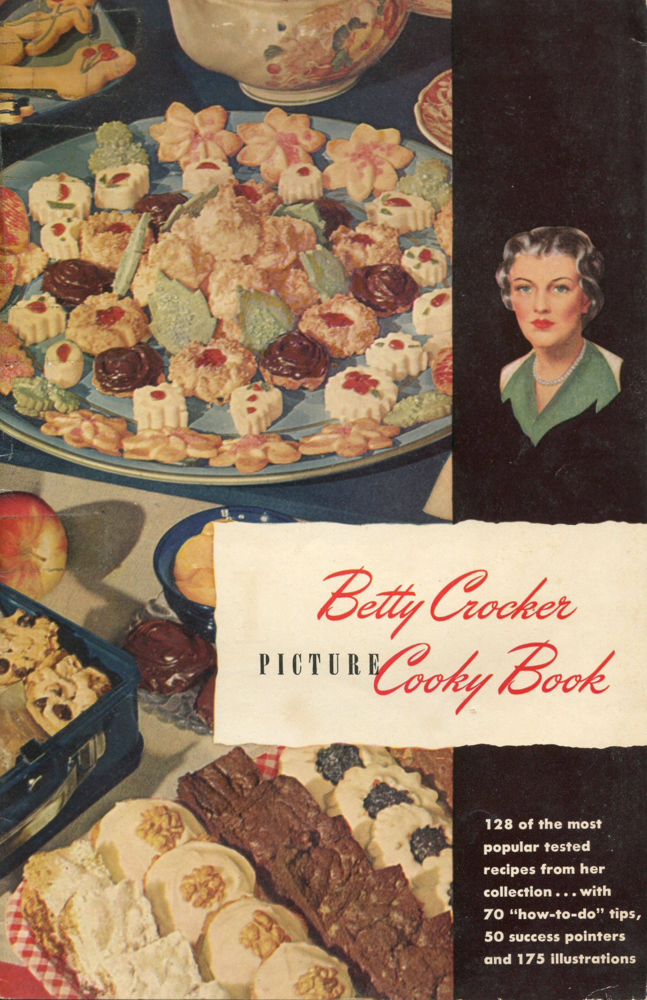
128 of the most
popular tested
recipes from her
collection ... with
70 “how-to-do” tips,
50 success pointers
and 175 illustrations
If you wish extra copies
of this book, send 25c
for each to: Betty Crocker,
General Mills,
Department 430,
623 Marquette Avenue,
Minneapolis 1, Minnesota.
This offer may be withdrawn without notice.
Copyright 1948, by General Mills, Inc. “Betty Crocker”, “Kitchen-tested”,
and “Breakfast of Champions”, are registered trade marks of General Mills.
Printed in U.S.A.
Dear Friend:
Here is our newest and fullest collection of cooky recipes ... our answer to thousands of requests from homemakers who have learned that everybody loves cookies! We give you many hints, shortcuts, and tricks that save you time and work ... everything that will make cooky-baking so easy for you.
In this book you’ll find every type of cooky—all the favorites our Staff has discovered in our years of testing in the General Mills kitchens. Testing, of course ... testing and re-testing ... is the real “success secret” behind all our recipes. Why, we often spend weeks testing and perfecting just one single recipe! We make the recipe over and over again, but each time some one change is made that the Staff feels might improve it. In addition, we try out any suggestions from our homemaker-testers. Finally, when we’re positive we’ve got the best possible recipe, we release that recipe to you.
Now before you start to bake, be sure you look at the “how-to-do” pages immediately following. But you’ll find good help on every page—for we have included all the little secrets for success that we have been gathering for years! If you follow these suggestions and our simplified and exact recipes, we know you’ll agree with us that cooky-making is fun!
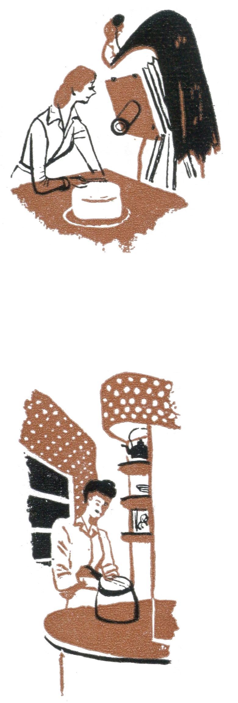
Our Staff would love to have you visit our colorful new quarters on the fifth floor of the General Mills Building in Minneapolis.
We are so proud of our five new kitchens! The Terrace Kitchen, pictured above, is used for general recipe testing and also for the preparation of luncheons to be served to special guests in our Early American Dining Room.
We also have a Kamera Kitchen for preparing foods for photography; a striking Polka Dot Kitchen for appliance testing; Tomorrow’s Kitchen for testing new food products and baking methods; and a Products Control Kitchen for the baking tests on our flours, quick mixes, etc. You’ll love our Tasting Bar, where we give recipes critical “taste-tests” to be sure they are perfect!
Don’t forget—if you are ever in Minneapolis, you will find a most warm welcome here!
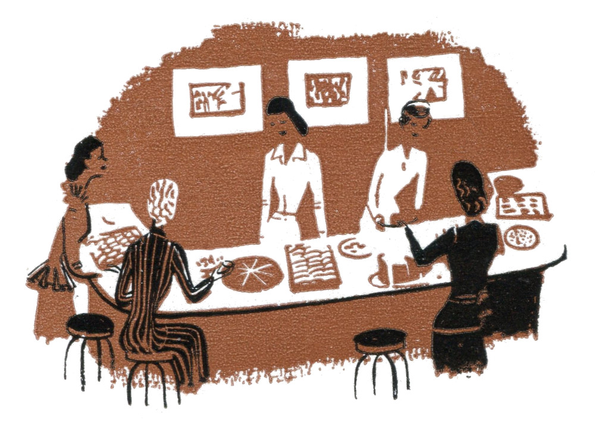
[Pg 3]
1 Read Recipe Carefully! Every word of it. And do be sure to see if there’s anything to be done before you start mixing ... like chopping nuts or melting chocolate.
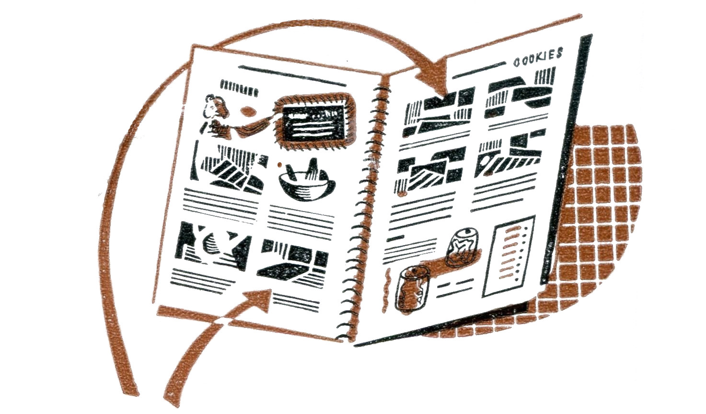
2 Look at the Pictures! They give you “know how” you need for every step.
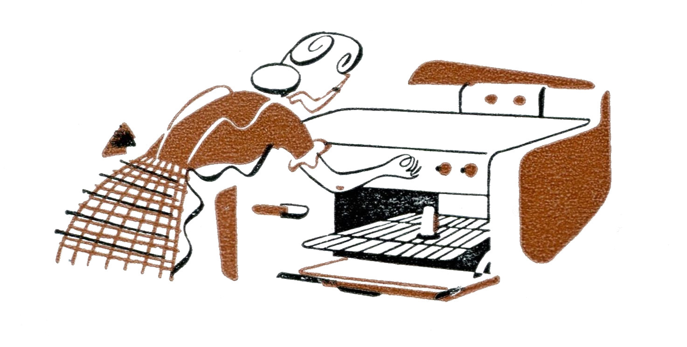
3 Turn on the Heat! If the cookies are to be baked immediately after mixing, see that the oven is heated to correct temperature.
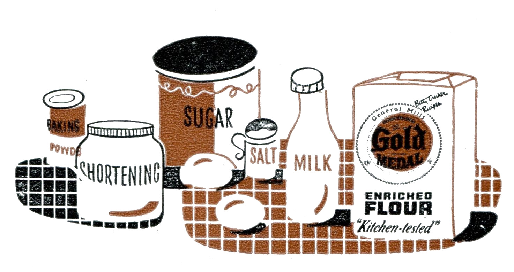
4 Get Your Ingredients Together! Saves time and steps to have them all in one place.
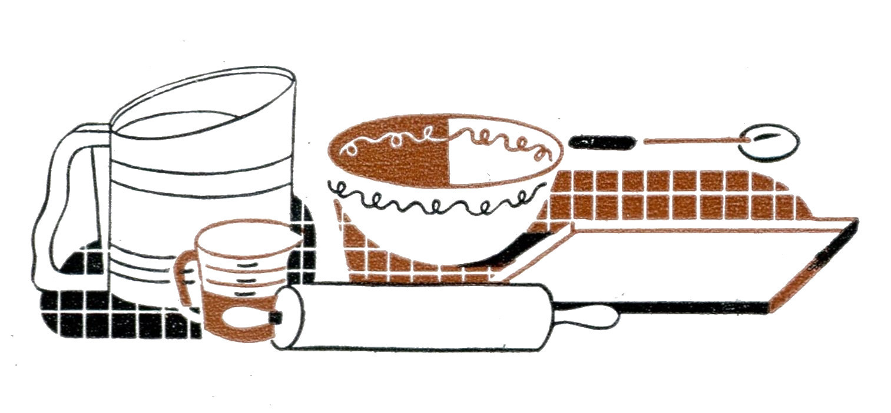
5 Collect Utensils, Too! Gather together all you’ll need ... from the flour sifter to the baking pan.
6 Measure as Exactly as a Druggist follows a doctor’s prescription! Two minutes spent measuring carefully may save you hours of grief.
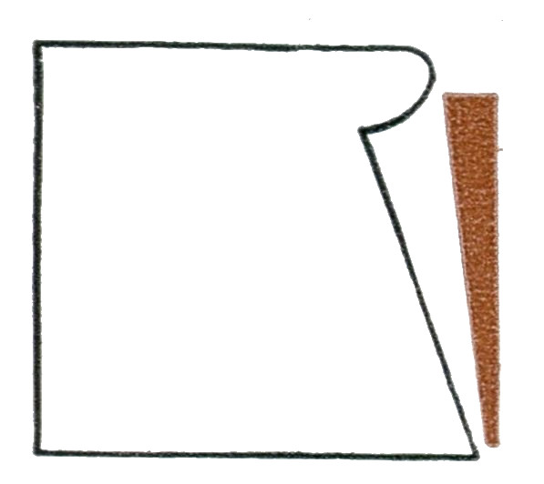
Use squares of paper when sifting, measuring, etc.
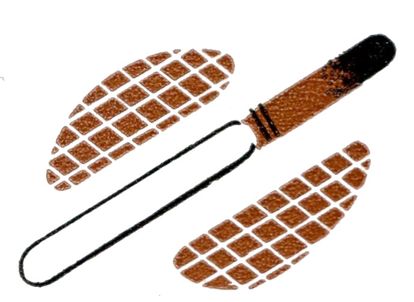
Use straight-edged knife for “leveling off.”
|
Dry Measuring Cup has no rim ... 1-cup line is even with top. Use for any dry ingredients or shortening. |
Liquid Measuring Cup ... has rim above the 1-cup line. Use for measuring any liquid ingredients. |
Graduated Measuring Cups ... ¼, ⅓, ½, 1 cup. Use for part-cups of any dry ingredients or shortenings. |
Measuring Spoons ... ¼, ½, and 1 teaspoon, 1 tablespoon. Use for less than ¼ cup of any ingredient. |
[4]
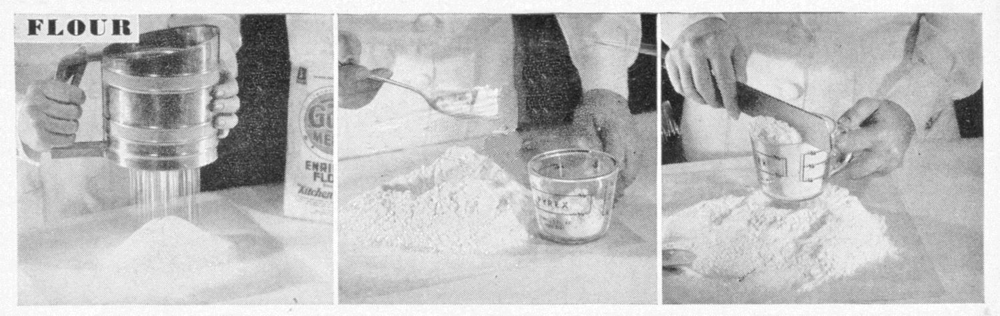
1 Sift flour through large open sifter (to aerate it) onto square of paper before measuring. | 2 Then spoon sifted flour lightly into a “dry” measuring cup ... heaping it up. |
3 Level off cup with straight-edged knife. Don’t shake cup. This is important! |
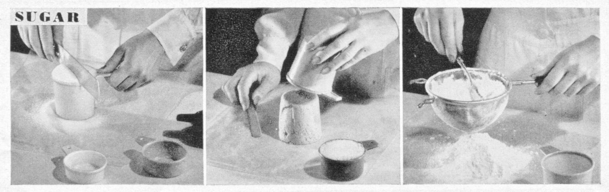
1 White Granulated Sugar needs sifting only if lumpy. Spoon lightly into “dry” measuring cup. Level it off with a straight-edged knife. Don’t knock or tap cup. |
2 Brown Sugar. If it’s lumpy, press through coarse sieve; or heat in slow oven; or crush lumps with rolling pin. Pack into “dry” measuring cup just enough to hold its shape. Level off. |
3Confectioners’ Sugar. Press through sieve to remove lumps. Spoon lightly into “dry” measuring cup. Level off with straight-edged knife. Don’t shake cup. |
Baking Powder, Soda, Salt, Cornstarch, Cream of Tartar, Spices, Etc.
Fill measuring spoon. Level off with straight-edged knife.
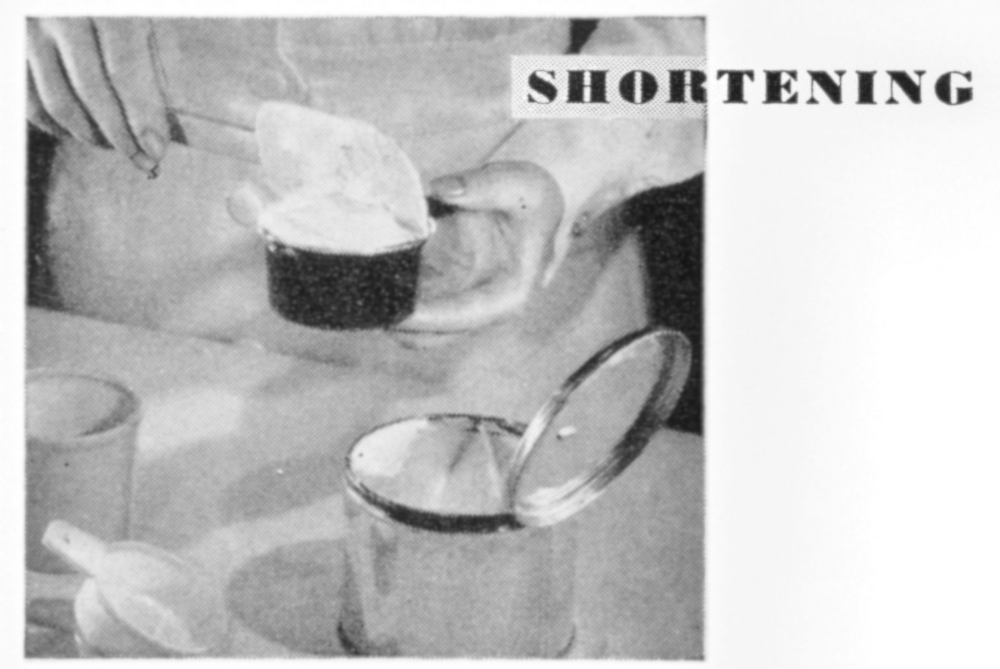
Use Graduated Measuring Cups. Have shortening at room temperature. Pack shortening firmly into measuring cup. Level off with straight-edged knife. In measuring less than ¼ cup, use a tablespoon.
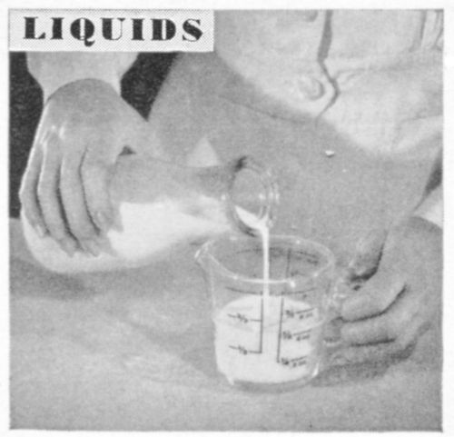
EGGS
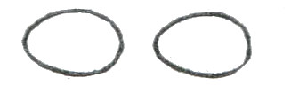 |
= | 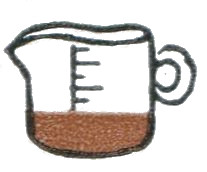 |
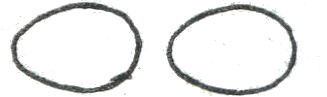 |
= | |
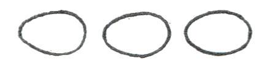 |
= | |
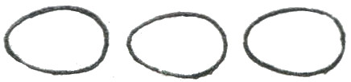 |
= |
Eggs vary in size ... so be sure to measure them. Never use less than the minimum amount specified in recipe.
[5]
|
|
Do keep a ruler handy,
To measure pans it’s dandy.
Place the rule across the top,
Right size pan prevents a flop!
|
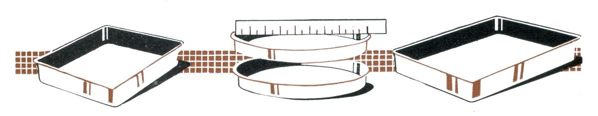
| Square Pan ... 2″ to 2½″ deep. |
Round Layer Pan ... at least 1¼″ deep for 8″ pan; 1½″ deep for 9″ pan. |
Oblong Pan ... 1½″ to 2½″ deep. |
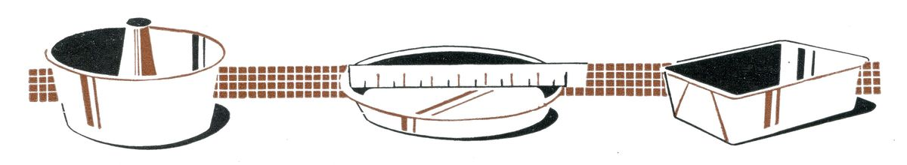
|
Tube-Center Pan 4″ deep. |
Pie Pan ... measured from inside rim to outside rim. |
Bread Loaf Pan 3½″ deep. |
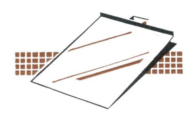
Cooky Sheet or Baking Sheet ... without sides.
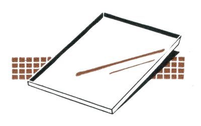
Jelly Roll Pan or Baking Sheet ... with low sides (½″).
Choose the size pan that the recipe states
When baking bar cookies, bread, pies, or fine cakes.
Measure with care to get just the right size,
It makes quite a diff’rence ... you’ll soon realize!
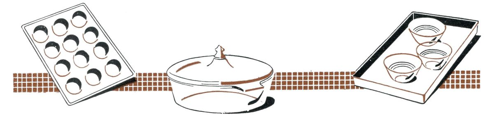
|
Muffin Pan ... deep or shallow cups. |
Casserole or Baking Dish ... with cover. |
Individual Custard Cups ... set in shallow pan to bake. |
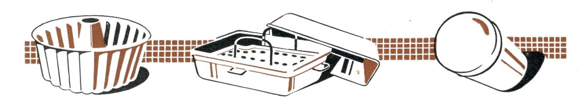
|
Fluted Pudding Mold ... for steamed puddings, etc. |
Roasting Pan ... with rack. |
Round Pudding Mold ... for brown bread, plum puddings, and other steamed puddings. |
[6]
|
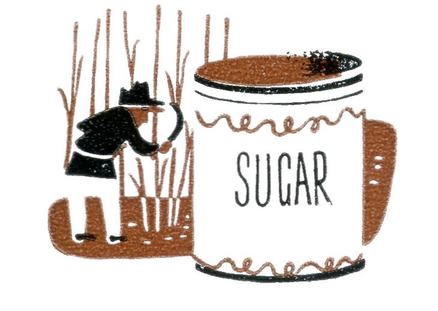 SUGAR Fine white granulated sugar, unless otherwise specified in recipe. |
This page gives the meaning of terms in this book! It’s here just to help you to be a Prize Cook! |
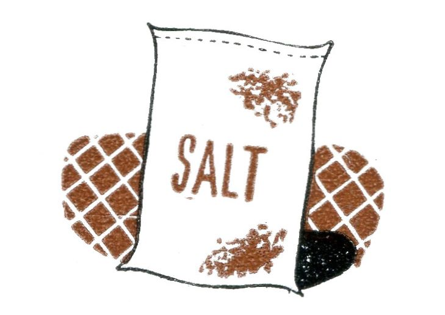 SALT Cooking salt in cloth sacks. It is cheaper and stronger than table salt. |
|
CHOCOLATE Unsweetened baking chocolate. If sweet chocolate or bits or pieces are required, recipe will so state. |
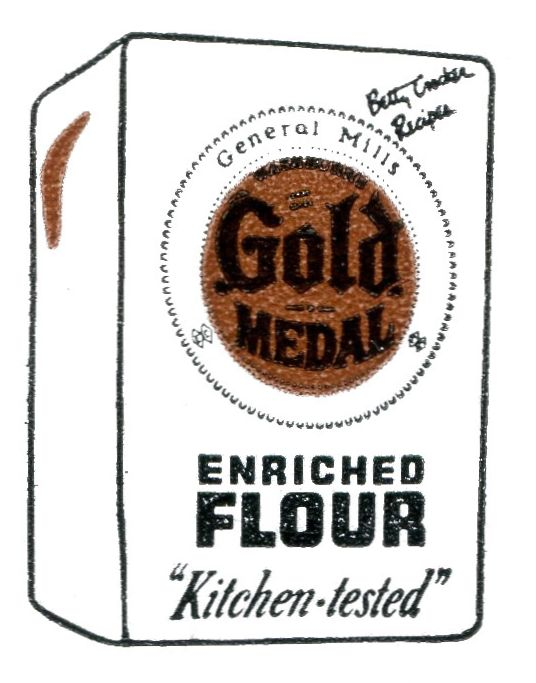 GOLD MEDAL FLOUR Gold Medal “Kitchen-tested” Enriched Flour—the country’s most popular brand of all-purpose flour. Recipes in this book have been perfected for Gold Medal only. |
EGGS Large fresh eggs (2 oz.) or equivalent amounts from smaller eggs. |
|
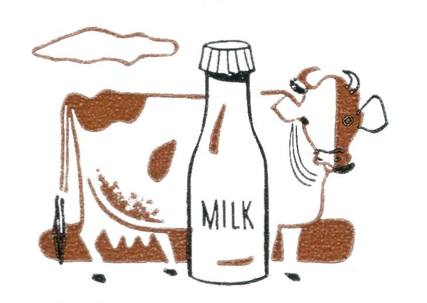 MILK Fresh, sweet milk, unless otherwise indicated. |
BUTTERMILK and SOUR MILK May be used interchangeably. Too old milk has disagreeable flavor! |
MOLASSES Dark molasses. If black New Orleans molasses is specified, ask grocer for “black strap.” |
|
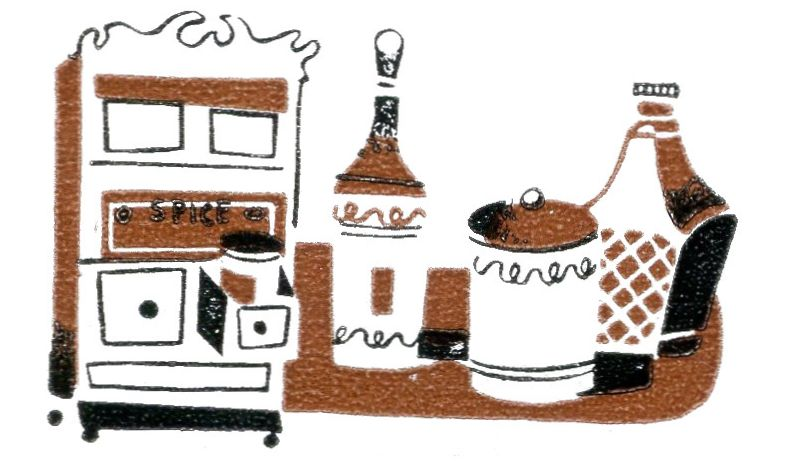 SPICES and FLAVORINGS High quality always, for flavor and dependability. |
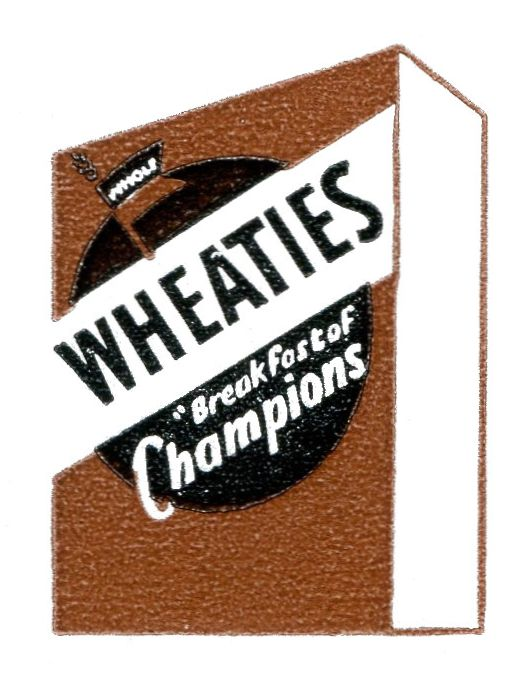 WHEATIES The crispy, whole-wheat flakes nationally known as the “Breakfast of Champions.” |
ROLLED OATS Either quick-cooking or regular (uncooked). |
|
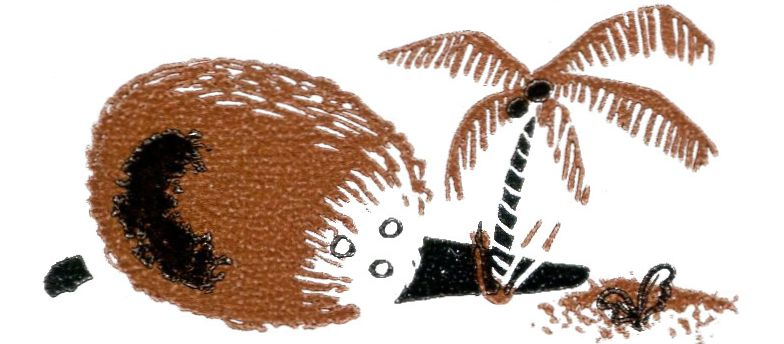 MOIST SHREDDED COCONUT Shredded coconut that’s moist ... either from a can or a package ... or shredded from a fresh coconut. |
BAKING POWDER Any of the well-known nationally distributed brands of baking powder give good results with the recipes in this book. |
COFFEE The beverage—not uncooked ground coffee. |
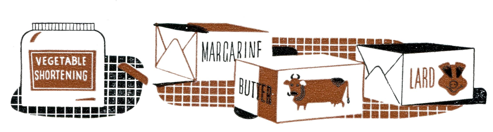
SHORTENING
Any fresh, mild-flavored solid fat ... animal or vegetable, such as those at right. Butter is indicated in certain recipes for flavor.
[7]
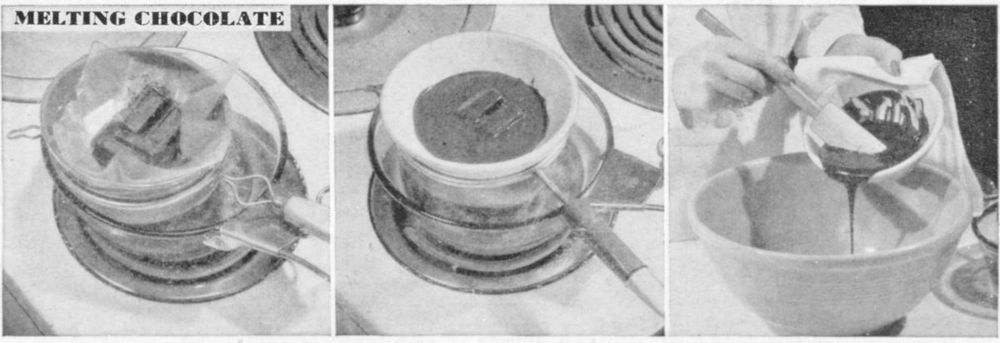
|
Place it on waxed paper set in bowl over boiling water. | or |
Place it in a small bowl set in a wire strainer over boiling water. |
Remove melted chocolate from bowl or paper with rubber scraper. |
PREPARING NUTS
Some foods look and taste their best if the nuts in them are in big chunks. In others, the nuts should be in smaller pieces. The recipes tell you just how.
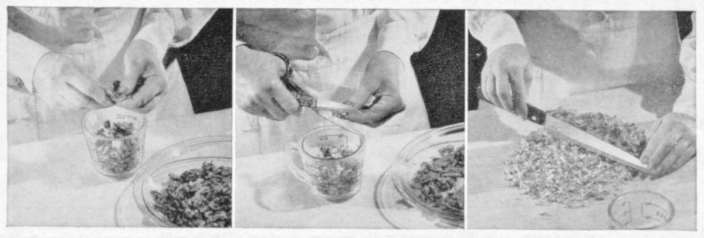
|
Broken Nuts: It’s quick and easy to break nuts with fingers into about ⅓-inch chunks. |
Cut-Up Nuts: Cut with scissors (works better than knife) into about ¼-inch pieces. |
Coarsely Chopped Nuts: Chop with long, straight knife. Hold point against cutting board, chop crisply through spread out nuts—swinging handle around in quarter circle. |
| TOAST NUTS: to be sure they will taste fresh. Heat through in moderate oven. | ||
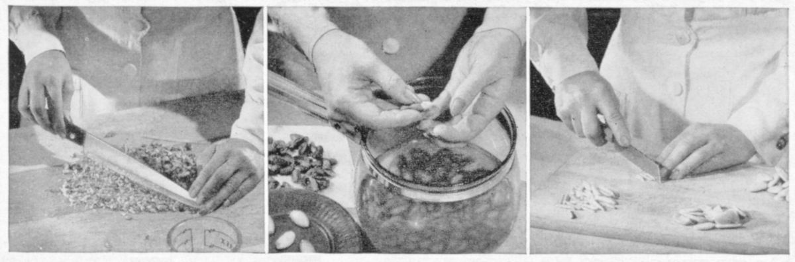
|
Finely Chopped Nuts: Chop same as for Coarsely Chopped, but into finer pieces. |
Blanched Nuts: Drop shelled nuts into boiling water. Let stand 2 to 5 minutes (until skins are loosened). Pour off hot water, add some cold. Pinch each nut between thumb and finger to push off skins, and lay nuts on plate or paper toweling to dry. |
Sliced or Slivered Nuts: First blanch ... then cut with very sharp knife while nuts are moist and warm. |
|
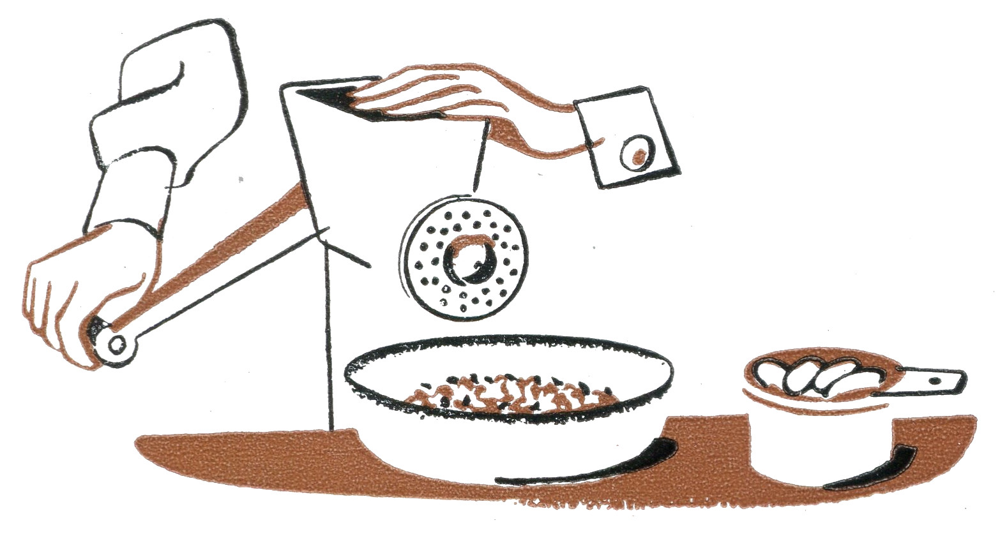 | ||
|
Ground Nuts: Use fine knife of food grinder for finely ground ... coarse knife for coarsely ground. Nuts should be dry. | ||
[8]
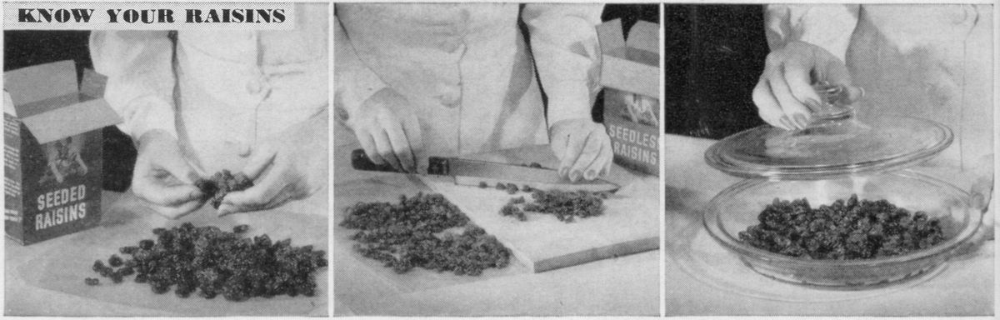
| Seeded raisins are the large variety from which seeds have been removed. The sweetness released when they were slit open makes them sticky. | Seedless raisins are the small variety, both dark and light ... dried from seedless grapes. Cut them to get the full sweetness and flavor. | Plump seedless raisins by washing and spreading them out in a flat pan. Cover. Heat slowly in mod. oven (350°) until they puff up and wrinkles come out. |
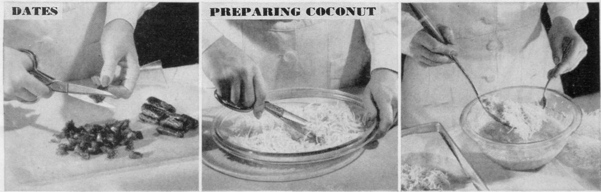
|
Cut up dates and other sticky fruits with wet scissors. Dip scissors in water occasionally. |
Snip through long shreds of coconut with scissors to shorten them. The shorter shreds blend into doughs more evenly. |
To tint shredded coconut: Soak it in milk or water (¼ cup for ½ cup coconut) with a few drops of food coloring added. Drain, dry on absorbent paper. |
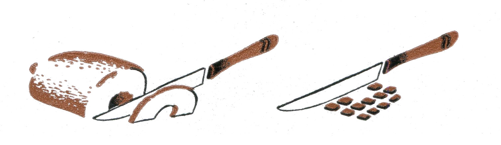
To cut citron or candied orange or lemon peel, first slice it thinly—then cut slices into ½″ or ¼″ squares.
| NUTS IN SHELL | SHELLED NUTS | ||
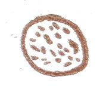 |
ALMONDS | 1 lb. = 1 cup nut meats | 1 lb. = 3½ cups nut meats |
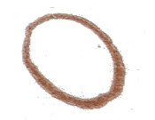 |
PECANS | 1 lb. = 2¼ cups nut meats | 1 lb. = 4 cups nut meats |
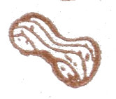 |
PEANUTS | 1 lb. = 2 cups nut meats | 1 lb. = 3 cups nut meats |
| WALNUTS | 1 lb. = 2 cups nut meats | 1 lb. = 4 cups nut meats |
|
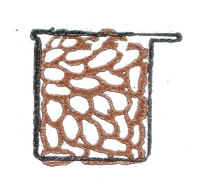 |
= | 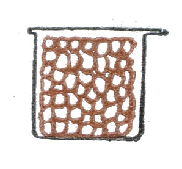 |
= | 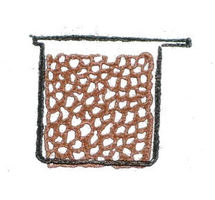 |
= | 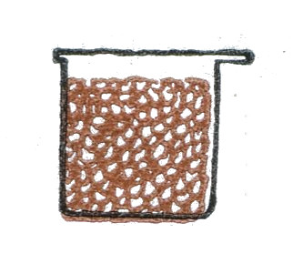 |
= | 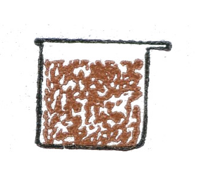 |
| 1 CUP WHOLE SHELLED NUTS |
broken | cut-up | coarsely chopped minus 1 tbsp. |
finely chopped ⅞ CUP |
| WHOLE | PITTED | CUT-UP | FINELY CUT | |
| DATES | 1 lb. = 2¼ cups | 2 cups | 1¾ cups | 1½ cups |
| PRUNES | 1 lb. = 2⅓ cups | 3½ cups (cooked) | 3 cups (cooked) | 2⅞ cups (cooked) |
| FIGS | 1 lb. = 2¾ cups | —— | 2⅔ cups | 2½ cups |
| RAISINS | 15-oz. pkg. = 2¾ cups | —— | 2¾ cups | 2½ cups |
[9]
Some of the sweetest memories of Home are bound up with Mother’s Cooky Jar. Long after the spicy fragrance of her ginger cookies baking has faded into the years ... the thought of that ample cooky jar on the shelf will bring back vividly the old-time peace ... and comfort ... and security of Home. Every Home should have a cooky jar!
| Hidden Treasures for the Toddlers | |
|---|---|
| Monkey-Faced Cookies | 19 |
| Sugar Cookies | 30 |
| Molasses Crinkles | 25 |
| Peanut Butter Cookies | 40 |
| Brown Sugar Drops | 16 |
| Old-Time Cinnamon Jumbles | 20 |
| Washboards | 25 |
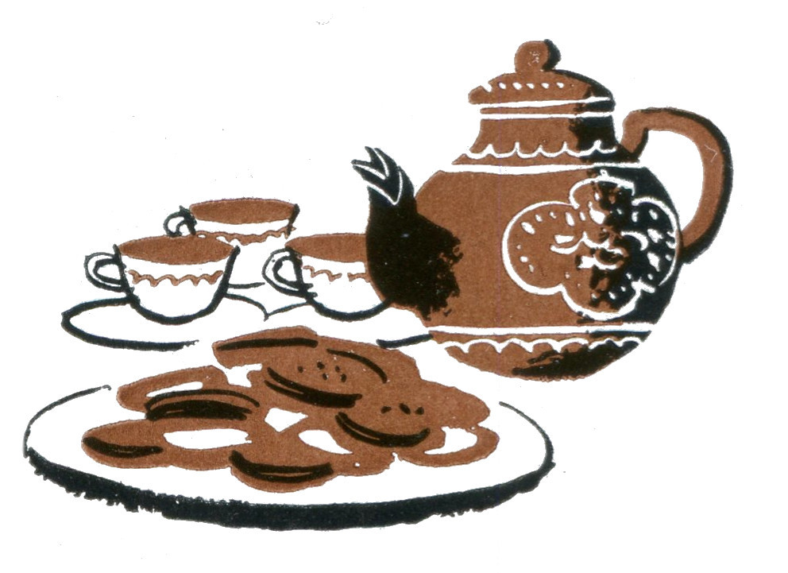
| “Tea-Off” with Cookies (for tea) | |
|---|---|
| Stone Jar Molasses Cookies | 34 |
| Butter Cookies | 31 and 43 |
| Lemon Sugar Cookies | 30 |
| Chocolate Pinwheels | 30 |
| Petticoat Tails | 24 |
| New Northland Cookies | 23 |
| Dainty Tea Brownies | 26 |
| Thumbprint Cookies | 41 |
| English Tea Cakes | 41 |
| Lemon Snowdrops | 41 |
| 3-in-1 Jumbles | 20 |
| Macaroons | 21 |
| For Hungry Home-Comers | |
|---|---|
| Hermits | 17 |
| Gingies | 34 |
| Busy-Day Nut Drops | 16 |
| Snickerdoodles | 25 |
| Chocolate Cream Drops | 18 |
| Oatmeal Drop Cookies | 19 |
| Spiced Prune Drops | 17 |
| Wheaties Drop Cookies | 17 |
| Lunch Box Surprises (taste-thrillers all!) | |
|---|---|
| Salted Peanut Cookies | 16 |
| Brownies | 26 |
| Monkey-Faced Cookies | 19 |
| Applesauce Cookies | 17 |
| Fig Bars | 32 |
| Plantation Fruit Bars | 26 |
| Tutti-Frutti Surprises | 27 |
| Glazed Orange Jumbles | 20 |
| Prune-Orange Bars | 29 |
| Put a “Lift” in Simple Desserts | |
|---|---|
| Brazil or Pecan Jumbles | 20 |
| Coconut Cream Drops | 18 |
| Chocolate Refrigerator Cookies | 22 |
| Orange-Almond Refrigerator Cookies | 22 |
| Butterscotch Cookies with Burnt Butter Icing | 18 |
| Date-Apricot Bars | 29 |
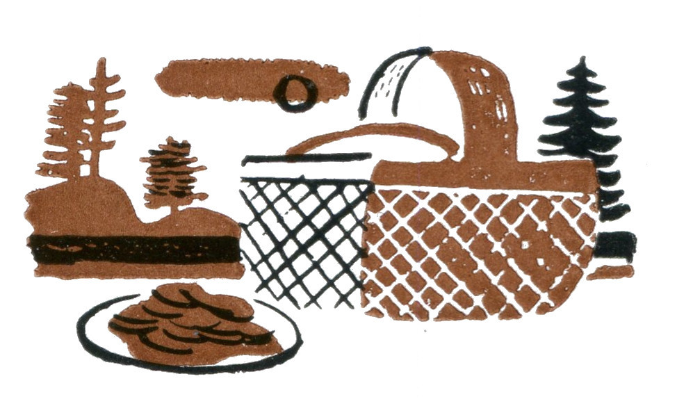
| Picnic Stars (under any skies) | |
|---|---|
| Chocolate Cream Drops | 18 |
| Oatmeal Refrigerator Cookies | 24 |
| Coconut-Lemon Bars | 28 |
| Frosted Gingies | 34 |
| Fruit-and-Nut Drops | 18 |
| Filled Cookies | 32 |
| Peanut Macaroons | 21 |
[10]
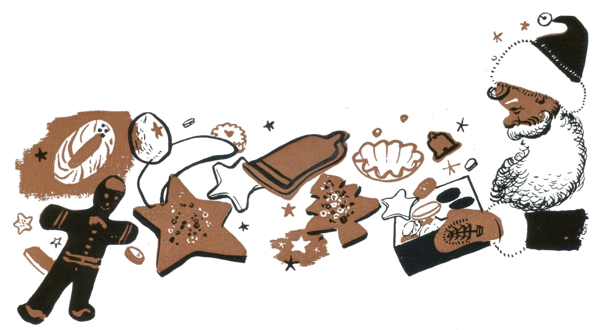
| Say “MERRY CHRISTMAS” with Cookies | |
|---|---|
| Holiday Fruit Cookies | 16 |
| Berliner Kranser | 42 |
| Poinsettias | 32 |
| Zucker Hütchen (“Little Sugar Hats”) | 38 |
| Scotch Shortbread | 39 |
| Hazelnut Bars | 29 |
| Mandel Kager (“Almond Cookies”) | 42 |
| Lebkuchen | 38 |
| Nurnberger | 38 |
| Merry Christmas Cookies (Dark and Light) | 37 |
| Spritz | 43 |
| Jelly-Meringue-Filbert Bars | 28 |
| Almond Wreaths | 43 |
| Finska Kakor (“Finnish Cakes”) | 39 |
| Sandbakelser (“Sand Tarts”) | 39 |
| Almond Crescents | 41 |
| Quick Cure for Homesickness (send plenty to divvy up) | |
|---|---|
| Date-and-Nut Squares | 27 |
| Hermits | 17 |
| Chocolate Chip Cookies | 20 |
| Filled Cookies | 32 |
| Date-Apricot Bars | 29 |
| Chocolate-Frosted Brownies | 26 |
| Ginger Creams | 19 |
| His Mother’s Oatmeal Cookies | 33 |
| Fun for the Youngsters (“tricks or treats” for Hallowe’en) | |
|---|---|
| Animal Cookies | 37 |
| Wheaties-Coconut Macaroons | 21 |
| Cookies with Faces | 31 |
| Decorated Party Cookies (place cards, etc.) | 31 |
| Jewelled Cookies | 27 |
| Chocolate Cream Drops | 18 |
| Chocolate Pinwheels | 30 |
| Gingerbread Boys | 34 |
| Bedtime Snacks (for light refreshment) | |
|---|---|
| Brown Sugar Drops | 16 |
| Sugar Jumbles | 20 |
| Coffee-and-Spice Drops | 17 |
| Ginger Refrigerator Cookies | 23 |
| Gold Cookies | 25 |
| Honey Peanut Butter Cookies | 40 |
| Coconut Jumbles | 20 |
| Mincemeat Cookies | 17 |
| Date-Oatmeal Cookies | 40 |
| Beau-Catchers (and Husband-Keepers) | |
|---|---|
| Date-and-Nut Squares | 27 |
| Ginger Creams | 19 |
| Chocolate-Frosted Brownies | 26 |
| His Mother’s Oatmeal Cookies | 33 |
| Nut Sugar Cookies | 30 |
| Date-Nut Refrigerator Cookies | 22 |
| Matrimonial Cake (Date Bars) | 29 |
| Chocolate Chip Cookies | 20 |
| Toffee-Nut Bars | 28 |
| Say It with Cookies (for birthdays, sick friends, etc.) | |
|---|---|
| Russian Tea Cakes | 42 |
| Butter Fingers | 41 |
| Walnut Squares | 27 |
| Little Sugar Hats | 38 |
| Filled Cookies in Fancy Shapes | 32 |
| Almond Wreaths | 43 |
| Orange-Chocolate Chip Cookies | 20 |
| Rich Sugar Cookies | 30 |
CLIP AND FILE at end of this chapter new cooky recipes from Gold Medal ads and from recipe folders in every sack of Gold Medal Flour.
[11]
“Cooky Shines”
Won’t you come into our Kitchen and join us in our “Cooky Shines?” That used to mean tea parties—but it’s what we call our Staff sessions of cooky baking. We have lots of fun trying out all the delicious cookies that come to us from many lands. I’d like to show you some of the cookies most popular with Staff members and friends who have shared their favorite recipes with us. You’ll see many varieties in the color picture on the next page. Please take a look—then turn back.
New, Easy, Double-Quick Way
Don’t all those cookies look tempting? And they’re ever so easy to make! For we’ve worked out a new simplified method—a double-quick method! Takes less than half the usual mixing time! Would you like to know the secret? Then turn to the step-by-step pictures following. Imagine you are standing right beside one of our Staff while she makes cookies. Could anything be easier? There’s no laborious creaming, no separate beating of eggs, only one bowl! Just a few simple basic steps.
More and Better Help
Now turn to the recipe pages, and have the fun of making the many different types of cookies. You’ll find all the little pointers you would notice if you were right in our kitchen. For instance, there’s a brand-new feature which I think will be a big help to you. We tell how to judge when the cookies are done. And don’t miss the recipes marked with a ★! They are special favorites with our Staff!
The “Key” Recipe Makes You Master of Many
You’ll love the new plan of key recipes with variations. When you master the key () recipe you’ll automatically know how to make several different kinds of cookies. And notice that each recipe calls for our all-purpose Gold Medal “Kitchen-tested” Enriched Flour. This is to safeguard your results.
Because you see, every recipe has been developed with and for this particular flour—and tested in representative homes—with Gold Medal. It gives that moist, full-flavored quality everyone wants in cookies.
Recipes Fit the Needs
The recipes are given in practical amounts for average families. Those for everyday cookies, and holiday cookies that keep well, make enough so you won’t have to bake too often. Recipes for the richer, dainty cookies make enough for special occasions.
Happy Memories
We’ve tried to include all the hints, shortcuts and tricks that save you time and work so you can delight your family with new treats each week. Cookies bring such a big reward in cheer and satisfaction! They make hospitality so easy! Invite your friends to join you for “Cooky Shines” in your kitchen and you’ll be giving them happy memories they’ll all cherish as long as they live!
[14]
BEFORE YOU START
DO
THIS....
|
1 Select baking sheets (cooky sheets or pans) as indicated in each recipe. Heavy or double sheets (two sheets of the same size placed one on top of the other) prevent cookies from browning on the bottom too much and too quickly. |
2 If pan with sides is used for cooky sheet, turn it upside-down and bake cookies on the bottom ... (insures even browning). Grease cool pans as indicated in recipes ... with unsalted shortening. |
|
3 Mix thoroughly the softened shortening, sugar, and eggs—also any molasses, syrup, or melted chocolate in the recipe. |
4 Stir in the liquid and flavoring. (A few recipes indicate that liquid and flour mixture should be added alternately.) |
[15]
|
5 Sift together and stir in the flour, salt, and leavening (baking powder or cream of tartar and soda)—also any spices in the recipe. Then, mix in any fruit or nuts. |
6 Chill dough, if indicated in recipe, to make it easy to handle. Then shape dough for different types of cookies as directed in the recipe. Place on prepared pans. |
|
7 Bake. Place pan on rack in center of oven. If cooky tops do not brown properly, move to a higher rack for last few minutes. Pans should be narrower, shorter than oven (to leave a 1″ space for circulation of heat). |
8 Look at cookies when minimum baking time is up. As soon as they are done (according to recipe), remove from oven. With a wide spatula, slip off baking sheet or out of pan onto wire rack to cool (as recipe directs). |
|
Store cooled cookies properly to keep top eating quality. Keep crisp, thin cookies in can with loose cover. Keep soft cookies in air-tight container (a covered earthen jar or a can with tight cover). Slices of apple or orange in jar help mellow and moisten cookies. Change fruit frequently. |
[16]
HOW TO MAKE DROP COOKIES (preliminary steps on pp. 14-15)
|
1 It will save time in spacing dough, if you grease in symmetrical rows where you want to drop the dough. It will also save washing browned grease off a tin pan. |
2 Drop dough by rounded or heaping teaspoonfuls, depending on size of cookies desired. With another teaspoon, push dough onto baking sheet ... being careful to peak up the dough. |
BROWN SUGAR DROPS ( Recipe) Soft, chewy. Wonderful brown sugar flavor.
Mix together thoroughly ...
Stir in ...
Sift together and stir in ...
Chill at least 1 hour. Drop rounded teaspoonfuls about 2″ apart on lightly greased baking sheet. Bake until set ... just until, when touched lightly with finger, almost no imprint remains.
TEMPERATURE: 400° (mod. hot oven).
TIME: Bake 8 to 10 min.
AMOUNT: About 6 doz. 2½″ cookies.
To prevent drop cookies spreading ... chill dough, peak it up, be sure oven temperature is correct.
★ HOLIDAY FRUIT COOKIES
Elegant. Richly studded with fruits and nuts. Butterscotch-flavored. Perfect for your loveliest hospitality.
Follow recipe above—and mix into the dough 1½ cups broken pecans, 2 cups candied cherries, cut in halves, and 2 cups cut-up dates. Place a pecan half on each cooky. Make these rich cookies smaller ... only 2″.
SALTED PEANUT COOKIES
These tempting peanut crunches are always a favorite both with children and grown-ups.
Follow recipe above—except in place of the 3½ cups flour, stir in 2 cups sifted flour, 2 cups rolled oats, 1 cup WHEATIES, 1 cup coarsely chopped salted peanuts (without husks). Bake until brown, 12 to 14 min.
BUSY-DAY NUT DROPS
Easy budget-savers. One of our home testers calls these her “wash day” cookies.
Follow recipe above—and mix into the dough 1 cup cut-up nuts.
BUSY-DAY COCONUT DROPS
Follow recipe above—and mix into the dough 1 cup moist shredded coconut.
[17]
COFFEE-AND-SPICE DROPS ( Recipe) Intriguing flavors from the Far East.
Mix together thoroughly ...
Stir in ...
Sift together and stir in ...
Chill at least 1 hour. Drop rounded teaspoonfuls about 2″ apart on lightly greased baking sheet. Bake until set ... just until, when touched lightly with finger, almost no imprint remains.
TEMPERATURE: 400° (mod. hot oven).
TIME: Bake 8 to 10 min.
AMOUNT: About 6 doz. 2½″ cookies.
★ HERMITS
Spicy, fruity, satisfying ... contributed by Mrs. William G. Dorr, who worked with us in our test kitchen one summer. She says they were always first choice with her little girls.
Follow recipe above—and mix into the dough 2½ cups halved seeded raisins and 1¼ cups broken nuts. Be careful not to overbake.
Wash them and spread out in a flat pan. Cover the pan and heat slowly in a moderate oven.
To get full flavor from seedless raisins, cut them in two with scissors after plumping.
MINCEMEAT COOKIES
Extra quick, no extra fruits needed ... they are in the mincemeat.
Follow recipe above—and mix into the dough 2 cups well drained mincemeat.
SPICED PRUNE DROPS
Follow recipe above—and add ¼ tsp. cloves with other spices. Mix into dough 2 cups cut-up cooked prunes (pitted and well drained), and 1 cup broken nuts.
APPLESAUCE COOKIES
Yummy applesauce cake in cooky form.
Follow recipe above—except add 1 tsp. cloves with other spices. Mix into the dough 2 cups well drained thick applesauce, 1 cup cut-up raisins, and ½ cup coarsely chopped nuts. Bake 9 to 12 min.
WHEATIES DROP COOKIES
Treats for young champions.
Mix together thoroughly ...
Stir in ...
Sift together and stir in ...
Stir in ...
Fold in ...
Chill dough. Drop by teaspoonfuls about 2″ apart on lightly greased baking sheet. Bake until, when touched lightly with finger, no imprint remains.
TEMPERATURE: 400° (mod. hot oven).
TIME: Bake 10 to 12 min.
AMOUNT: About 5 doz. 2½″ cookies.
[18]
OLD-FASHIONED SOUR CREAM DROPS ( Recipe)
Soft, tender, cream-rich.
Mix together thoroughly ...
Stir in ...
Sift together and stir in ...
Chill at least 1 hour. Drop rounded teaspoonfuls about 2″ apart on lightly greased baking sheet. Bake until delicately browned, just until, when touched lightly with finger, almost no imprint remains.
TEMPERATURE: 425° (hot oven).
TIME: Bake 8 to 10 min.
AMOUNT: About 5 doz. 2½″ cookies.
★ BUTTERSCOTCH COOKIES WITH BURNT BUTTER ICING
Really delectable, especially with the unusual buttery icing. Mrs. R. C. Karstad of Nicollet, Minnesota, won a prize on them.
Follow recipe above—except use brown sugar in place of granulated sugar. Mix into the dough ⅔ cup cut-up nuts. Spread cooled cookies with
Use freshly soured cream for good flavor. Buy it from the dairy. Or sour it yourself by adding 1 tbsp. vinegar or lemon juice to 1 cup sweet cream.
BURNT BUTTER ICING
Melt 4 tbsp. butter until golden brown. Blend in 1 cup sifted confectioners’ sugar and ½ tsp. vanilla. Stir in 1 to 2 tbsp. hot water until icing spreads smoothly.
AMOUNT: Icing for about 30 cookies.
to give iced cookies a professional air: Place the same amount of icing (1 tsp.) on center of each. Then, with a spatula, spread the icing with circular motion in pretty swirls.
COCONUT CREAM DROPS
Follow recipe above—except mix into the dough 1 cup moist shredded coconut.
CHOCOLATE CREAM DROPS
Follow recipe above—except stir into shortening mixture 2 sq. unsweetened chocolate (2 oz.), melted. Mix into the dough 1 cup cut-up nuts. Frost cooled cookies if desired with
CHOCOLATE ICING
Melt together over hot water 1 tbsp. butter and 1 sq. unsweetened chocolate (1 oz.). Stir in 3 tbsp. top milk and 1½ cups sifted confectioners’ sugar. Thin with cream to make glossy and easy to spread.
AMOUNT: Icing for about 30 cookies.
FRUIT-AND-NUT DROPS
Follow recipe above—except sift with dry ingredients 1 tsp. cinnamon, ½ tsp. cloves, ¼ tsp. nutmeg. Mix into the dough 1 cup cut-up dates (or raisins) and 1 cup cut-up nuts.
NOTE: The spices may be omitted.
[19]
★ GINGER CREAMS Fluffy ginger cakes ... topped with creamy white icing.
They bring memories of a real farm home near Owatonna, Minnesota, where children trooped to the cooky jar after chores were done. Mildred Bennett (now Mrs. Axel Anderson), who was honored one year as national 4-H girl, brought us this recipe when she was a member of our staff.
Mix together thoroughly ...
Stir in ...
Sift together and stir in ...
Chill dough. Drop rounded teaspoonfuls about 2″ apart on lightly greased baking sheet. Bake until set ... just until, when touched lightly with finger, almost no imprint remains. While slightly warm, frost with Quick Cream Icing (below.)
TEMPERATURE: 400° (mod. hot oven).
TIME: Bake 7 to 8 min.
AMOUNT: About 4 doz. 2″ cookies.
QUICK CREAM ICING
Delicious, creamy-tasting topping ... ideal for Ginger Creams and other festive cookies.
Blend together ¾ cup sifted confectioners’ sugar, ¼ tsp. vanilla, and cream to make easy to spread (about 1 tbsp.).
OATMEAL DROP COOKIES
Chewy ... with a hint of molasses.
We created this recipe in our test kitchen for the little daughter of a famous actress, and for all little children.
Mix together thoroughly ...
Sift together and stir in ...
Stir in ...
Drop rounded teaspoonfuls about 2″ apart on lightly greased baking sheet. Bake until lightly browned.
TEMPERATURE: 400° (mod. hot oven).
TIME: Bake 8 to 10 min.
AMOUNT: About 5 doz. 2½″ cookies.
★ MONKEY-FACED COOKIES
You’ll be amused by the droll faces.
In an antique shop, pasted on the under side of a drawer in an old table, a radio friend of Fultonville, New York, discovered this recipe written in faded ink in old-fashioned script: “for Elsa.”
Mix together thoroughly ...
Stir in ...
Sift together and stir in ...
Drop rounded teaspoonfuls about 2½″ apart on lightly greased baking sheet. Place 3 raisins on each for eyes and mouth. Bake until set. The faces take on droll expressions in baking.
TEMPERATURE: 400° (mod. hot oven).
TIME: Bake 10 to 12 min.
AMOUNT: About 4 doz. 2½″ cookies.
[20]
SUGAR JUMBLES ( Recipe) Little sugar cakes of old-time goodness.
Mix together thoroughly ...
Sift together and stir in ...
Drop rounded teaspoonfuls about 2″ apart on lightly greased baking sheet. Bake until delicately browned ... cookies should still be soft. Cool slightly ... then remove from baking sheet.
TEMPERATURE: 375° (quick mod. oven).
TIME: Bake 8 to 10 min.
AMOUNT: About 3 doz. 2″ cookies.
COCONUT JUMBLES
Follow recipe above—and mix into the dough 1 cup moist shredded coconut.
★ CHOCOLATE CHIP COOKIES
The glamorous Toll House cookies ... first introduced to American homemakers in 1939 through my series of radio talks on “Famous Foods from Famous Eating Places.”
Follow recipe above—except in place of ½ cup sugar use ¾ cup (half brown, half white). Then mix into the dough ½ cup cut-up nuts and one 7-oz. package chocolate pieces (about 1¼ cups).
ORANGE-CHOCOLATE CHIP COOKIES
Follow recipe for Chocolate Chip cookies and add 1 tsp. grated orange rind to the shortening mixture.
3-IN-1 JUMBLES
Choco-nut ... coco-nut ... date-nut.
Follow recipe above—and divide dough into three parts. Choco-Nut: To one part, add ½ sq. unsweetened chocolate (½ oz.), melted, and drop whole nutmeats (½ cup) into it ... coating each thoroughly. Coco-Nut: To another part, add ½ cup moist shredded coconut. Date-Nut: Leave third part plain ... and drop nut-stuffed dates (14) into it ... coating each thoroughly. Each coated date and each coated nut makes a cooky.
GLAZED ORANGE JUMBLES
Double-orange flavor.... Sure to win favor.
Follow recipe above—mix into dough 1½ tsp. grated orange rind and, if desired, 1 cup chopped nuts. Bake. While hot, dip tops of cookies in orange glaze (⅓ cup sugar, 3 tbsp. orange juice, 1 tsp. grated orange rind ... heated together).
BRAZIL OR PECAN JUMBLES
Follow recipe above—and stir into the dough 2 cups cut-up Brazil or other nuts.
OLD-TIME CINNAMON JUMBLES
Made with buttermilk ... soft and cake-like.
“So easy ... that making them is a thrill for the girls in the Home Economics classes each year,” according to Miss Sarah M. Knight of Buffalo, New York. And even her little sixth-graders report making them with great success in their own homes!
Mix together thoroughly ...
Stir in ...
Sift together and stir in ...
Chill dough. Drop rounded teaspoonfuls about 2″ apart on lightly greased baking sheet. Sprinkle with mixture of sugar and cinnamon (¼ cup sugar and 1 tsp. cinnamon). Bake until set but not brown.
TEMPERATURE: 400° (mod. hot oven).
TIME: Bake 8 to 10 min.
AMOUNT: About 4 doz. 2″ cookies.
[21]
COCONUT MACAROONS ( Recipe) Moist, chewy, chock-full of coconut.
Beat until fluffy (only ½ min.) ...
Stir in ...
Blend in ...
Drop rounded teaspoonfuls 2″ apart on ungreased wrapping paper on baking sheet. Bake until set and delicately browned. (Illustrated directions at bottom of page tell how to remove macaroons from paper easily.) They spread during baking, so when they come from oven shape into mounds by gathering in edges with fingers.
TEMPERATURE: 325° (slow mod. oven).
TIME: Bake 15 to 18 min.
AMOUNT: About 2½ doz. 1½″ macaroons.
CHOCOLATE-COCONUT MACAROONS
Follow recipe above—and add 2 sq. unsweetened chocolate (2 oz.), melted.
CHERRY-COCONUT MACAROONS
Follow recipe above—and add ½ cup chopped candied cherries.
ALMOND MACAROONS
Soften with hands ...
Work in ...
Drop teaspoonfuls 2″ apart on ungreased wrapping paper on baking sheet. Pat tops lightly with fingers dipped in cold water. Bake until set and delicately browned. Remove from paper.
TEMPERATURE: 325° (slow mod. oven).
TIME: Bake 18 to 20 min.
AMOUNT: About 5 doz. 2″ macaroons.
ALMOND PASTE (1 lb.)
Grind 2 cups blanched almonds, thoroughly dried (not toasted), through finest knife of food grinder. Then grind twice more. Mix in 1½ cups sifted confectioners’ sugar. Blend in ¼ cup egg whites, unbeaten, and 2 tsp. almond extract. Mold into ball. Let age in tightly covered container in refrigerator at least 4 days.
Remove paper with baked macaroons on it. Lay a wet towel on the hot baking sheet. Place paper of macaroons on towel and let stand 1 minute. Steam will loosen macaroons. Slip off with spatula.
WHEATIES-COC’N’T MACAROONS
Follow recipe above—except, in place of 2½ cups coconut, use 2 cups WHEATIES and 1 cup coconut. Bake 12 to 15 min.
PEANUT MACAROONS
Thin, wafery.
Beat until lemon-colored (5 min.) ...
Gradually beat in ...
Mix together and gently fold in ...
Add and mix just enough to blend in ...
Drop teaspoonfuls 2″ apart on ungreased wrapping paper on baking sheet. Bake until set and delicately browned. Remove from paper immediately.
TEMPERATURE: 325° (slow mod. oven).
TIME: Bake 14 to 15 min.
AMOUNT: About 3 doz. 2″ macaroons.
[22]
HOW TO MAKE REFRIGERATOR COOKIES (preliminary steps on pp. 14-15)
|
1 Press and mold with hands into a long roll, even and smooth, and as big around as you want your cookies to be. |
2 Wrap in waxed paper ... twisting ends to hold the roll in shape. Or press into a waxed cardboard carton (butter or ice cream carton). |
|
3 Chill roll of dough until it is firm enough to slice easily. To speed up chilling, place in freezing compartment. |
4 Slice with a thin knife, very sharp, to insure neat slices with uncrumbled edges. Return unused dough to refrigerator so it can remain stiff. |
REFRIGERATOR COOKIES ( Recipe)
Melt-in-the-mouth, rich, and crispy.
Mix together thoroughly ...
Sift together and stir in
*Or use 1½ tsp. vanilla (add with eggs).
Mix thoroughly with hands. Press and mold into a long smooth roll about 2½″ in diameter. Wrap in waxed paper, and chill until stiff (several hours or overnight). With a thin, sharp knife, cut in thin slices ⅛″ to ¹⁄₁₆″ thick. Place slices a little apart on ungreased baking sheet. Bake until lightly browned.
TEMPERATURE: 400° (mod. hot oven).
TIME: Bake 6 to 8 min.
AMOUNT: About 6 doz. 2½″ cookies.
★ NUT REFRIGERATOR COOKIES
Nut-lovers really go for these cookies.
Follow recipe above—and mix into dough ½ cup cut-up blanched almonds or black walnuts or other nuts.
DATE-NUT REFRIGERATOR COOKIES
Follow recipe above—using both cinnamon and vanilla. Mix into dough ½ cup finely chopped nuts and ½ cup finely cut dates.
ORANGE-ALMOND REFRIGERATOR COOKIES
Follow recipe above—but omit cinnamon. Stir 1 tbsp. grated orange rind into shortening mixture. Mix into dough ½ cup cut-up blanched almonds.
CHOCOLATE REFRIGERATOR COOKIES
Follow recipe above—but omit the cinnamon. Blend 2 sq. unsweetened chocolate (2 oz.), melted and cooled, into the shortening mixture.
for an elegant dessert: Make a roll by arranging the chocolate or ginger cookies (see p. 23) side by side with sweetened whipped cream between. Spread whipped cream over top and sides of roll. Chill 6 to 8 hr. Slice diagonally for gaily striped servings.
[23]
GINGER REFRIGERATOR COOKIES
Gingery favorites in jig-time!
Mix together thoroughly ...
Sift together and stir in ...
Mix thoroughly with hands. Press and mold into a long, smooth roll about 2½″ in diameter. Wrap in waxed paper, and chill until stiff (several hours or overnight). With thin, sharp knife, cut in thin slices ⅛″ to ¹⁄₁₆″ thick. Place slices a little apart on ungreased baking sheet. Bake until lightly browned.
TEMPERATURE: 400° (mod. hot oven).
TIME: Bake 8 to 10 min.
AMOUNT: About 9 doz. 2½″ cookies.
★ NEW NORTHLAND COOKIES
Crunchy, flavorful shortening-savers.
Languid days on the St. Lawrence; the pink, rocky cliffs and blue icebergs of Labrador; and afternoon tea on deck. Such are the memories these cookies bring to Ruth G. Anderson of our Staff who brought back the recipe after a cruise to the Northland.
Mix together thoroughly ...
Stir in ...
Sift together and stir in ...
Mix in ...
Mix thoroughly with hands. Press and mold into a long smooth roll about 2½″ in diameter. Wrap in waxed paper, and chill until stiff (several hours or overnight). With thin, sharp knife, cut in thin slices ⅛″ to ¹⁄₁₆″ thick. Place slices a little apart on ungreased baking sheet. Bake until lightly browned. Remove from pan immediately.
TEMPERATURE: 400° (mod. hot oven).
TIME: Bake 6 to 8 min.
AMOUNT: About 4 doz. 2½″ cookies.
[24]
★ PETTICOAT TAILS
Richly delicate and dainty.
This recipe was brought from France to Scotland by Mary, Queen of Scots. The French name “Petits Gateaux Tailles” means—“little cakes cut off.” But the name came to be pronounced as it sounded to the Scotch and English—“Petticoat Tails.”
Mix together thoroughly ...
Sift together and stir in ...
Mix thoroughly with hands. Press and mold into a long, smooth roll about 2″ in diameter. Wrap in waxed paper, and chill until stiff (several hours or overnight). With thin, sharp knife, cut in thin slices ⅛″ to ¹⁄₁₆″ thick. Place slices a little apart on ungreased baking sheet. Bake until lightly browned.
TEMPERATURE: 400° (mod. hot oven).
TIME: Bake 8 to 10 min.
AMOUNT: About 6 doz. 2″ cookies.
OATMEAL REFRIGERATOR COOKIES
Nice and chewy, with a molasses-lemon tang.
Voted the best oatmeal cooky ever tasted ... when sent to our Recipe Contest by Mrs. J. A. Gmeinder of St. Paul, Minnesota. The distinguishing molasses-lemon flavor was an idea from Mrs. Richard Nugent, Brooklyn, New York.
Mix together thoroughly ...
Sift together and stir in ...
Mix in ...
Mix thoroughly with hands. Press and mold into a long, smooth roll about 2½″ in diameter. Wrap in waxed paper, and chill until stiff (several hours). With thin, sharp knife, cut in thin slices ⅛″ to ¹⁄₁₆″ thick. Place slices a little apart on ungreased baking sheet. Bake until lightly browned.
TEMPERATURE: 400° (mod. hot oven).
TIME: Bake 8 to 10 min.
AMOUNT: About 4 doz. 2½″ cookies.
PRETTY FOR PARTIES
to make Petticoat Tails match your color scheme: Tint the dough with a few drops of red food coloring and use rose flavoring for a pink party. Use wintergreen flavoring and a few drops of green coloring for a green party.
[25]
SNICKERDOODLES
Fun to say ... to sniff ... to eat!
Pat Roth of our Staff said, “It’s one of my happy childhood memories. My mother would be baking when we came home from school and we would have Snickerdoodles hot out of the oven with a glass of milk.”
Mix together thoroughly ...
Sift together and stir in ...
Chill dough. Roll into balls the size of small walnuts. Roll in mixture of 2 tbsp. sugar and 2 tsp. cinnamon. Place about 2″ apart on ungreased baking sheet. Bake until lightly browned ... but still soft. (These cookies puff up at first ... then flatten out with crinkled tops.)
TEMPERATURE: 400° (mod. hot oven).
TIME: Bake 8 to 10 min.
AMOUNT: About 5 doz. 2″ cookies.
GOLD COOKIES
Really awfully good ... and they use up those extra egg yolks!
Mix together thoroughly ...
Stir in ...
Sift together and stir in ...
Chill dough. Roll into balls the size of walnuts ... then roll balls in a mixture of ¾ cup finely chopped nuts and 2 tsp. cinnamon. Place 3″ apart on ungreased baking sheet. Bake until golden brown ... but still soft.
TEMPERATURE: 400° (mod. hot oven).
TIME: Bake 12 to 15 min.
AMOUNT: About 5 doz. 2″ cookies.
★ MOLASSES CRINKLES
Thick, chewy, with crackled, sugary tops.
When served at Mrs. Fred Fredell’s in St. Paul, Minnesota, they were so delicious I begged the recipe. Thanks to her, thousands of homes have enjoyed these spicy cookies.
Mix together thoroughly ...
Sift together and stir in ...
Chill dough. Roll into balls the size of large walnuts. Dip tops in sugar. Place, sugared-side-up, 3″ apart on greased baking sheet. Sprinkle each cooky with 2 or 3 drops of water to produce a crackled surface. Bake just until set but not hard.
TEMPERATURE: 375° (quick mod. oven).
TIME: Bake 10 to 12 min.
AMOUNT: About 4 doz. 2½″ cookies.
WASHBOARDS
Coconut-taffy bars.
Mix together thoroughly ...
Stir in ...
Sift together and stir in ...
Mix in ...
Chill dough 2 hr. Roll into balls the size of walnuts. Place 2″ apart on ungreased baking sheet. With fingers, flatten each ball into a 1½″ × 2½″ oblong ¼″ thick. (And we do mean ¼ inch!) Press each cooky lengthwise with tines of floured fork in washboard effect. Bake until lightly browned.
TEMPERATURE: 400° (mod. hot oven).
TIME: Bake 8 to 10 min.
AMOUNT: About 5 doz. 2″ × 3″ cookies.
[26]
HOW TO MAKE BAR COOKIES (preliminary steps on pp. 14-15)
|
1 Spread dough in greased pan and bake as directed. |
2 Cut into squares or bars when slightly cool. |
3 Remove from the pan with a wide spatula. |
BROWNIES ( Recipe) Chewy, fudgy squares ... everyone loves them!
Melt together over hot water ...
Beat in ...
Sift together and stir in ...
Mix in ...
Spread in well greased 8″ square pan (8 × 8 × 2″). Bake until top has dull crust. A slight imprint will be left when top is touched lightly with finger. Cool slightly ... then cut into squares.
TEMPERATURE: 350° (mod. oven).
TIME: Bake 30 to 35 min.
AMOUNT: 16 2″ squares.
CHOCOLATE-FROSTED BROWNIES
“Lickin’ good!” ... youngsters say.
Follow recipe above—and spread cooled bars or squares before cutting with
MARIE’S CHOCOLATE ICING
Melt over hot water 1 tbsp. butter and 1 sq. unsweetened chocolate (1 oz.). Blend in 1½ tbsp. warm water. Stir and beat in about 1 cup sifted confectioners’ sugar (until icing will spread easily).
DAINTY TEA BROWNIES
Picturesque ... very thin. A highlight of the silver teas at a Minneapolis church.
Follow recipe above—except chop nuts finely and spread dough in two well greased oblong pans (9 × 13 × 2″). Sprinkle with ¾ cup blanched and finely sliced green pistachio nuts. Bake 7 to 8 min. Cut immediately into squares or diamonds. Remove from pan while warm.
PLANTATION FRUIT BARS
Little sugar and shortening ... but delicious. Sent to us by Mrs. Charles Willard of Chicago.
Mix together thoroughly ...
Stir in ...
Sift together and stir in ...
Mix in ...
Spread in greased oblong pan (9 × 13 × 2″). Bake. Cool slightly ... spread with Lemon Icing (see below) and cut into bars.
TEMPERATURE: 350° (mod. oven).
TIME: Bake 25 to 30 min.
AMOUNT: 4 doz. 1″ × 2″ bars.
LEMON ICING (for Plantation Fruit Bars)
Gradually beat ½ cup sifted confectioners’ sugar into 1 stiffly beaten egg white. Add dash of salt, ¼ tsp. lemon extract.
[27]
DATE-AND-NUT SQUARES
To sugar confection-like Date-and-Nut Squares (left) ... dip in confectioners’ sugar and shake.
Chewy favorites with rich nutty flavor. Much like the Bishop’s Bread served to circuit-riding preachers in days of Early America.
Beat until foamy ...
Beat in ...
Sift together and stir in ...
Mix in ...
Spread in well greased 8″ square pan (8 × 8 × 2″). Bake until top has dull crust. Cut into squares while warm, cool, then remove from pan. If desired, dip in confectioners’ sugar.
TEMPERATURE: 325° (slow mod. oven).
TIME: Bake 25 to 30 min.
AMOUNT: 16 2″ squares.
JEWELLED COOKIES
Glowing with gems of spicy gumdrops (red and green for Christmas holidays).
Beat until foamy ...
Beat in ...
Sift together and stir in ...
Mix in ...
Spread in well greased and floured 9″ square pan (9 × 9 × 2″). Sprinkle extra cut-up gumdrops (about ½ cup) over top of batter. Bake until top has a dull crust. Cut into squares while warm, cool, then remove from pan. (Crust will crack.)
TEMPERATURE: 325° (slow mod. oven).
TIME: Bake 30 to 35 min.
AMOUNT: 16 2″ squares.
★ WALNUT SQUARES
Almost candy ... so rich and nutty.
Beat until foamy ...
Beat in ...
Sift together and stir in ...
Mix in ...
Spread in well greased 8″ square pan (8 × 8 × 2″). Bake until top has a dull crust. Cut into squares while warm, cool, then remove from pan.
TEMPERATURE: 325° (slow mod. oven).
TIME: Bake 25 to 30 min.
AMOUNT: 16 2″ squares.
TUTTI-FRUTTI SURPRISES
Like moist fruit cake ... full of good things.
Beat until foamy ...
Gradually beat in ...
Stir in ...
Sift together and stir in ...
Mix in ...
Spread in well greased 8″ square pan (8 × 8 × 2″). Bake until top has a dull crust. Cut into squares while warm, cool, then remove from pan.
TEMPERATURE: 325° (slow mod. oven).
TIME: Bake 30 to 35 min.
AMOUNT: 16 2″ squares.
[28]
TOFFEE-NUT BARS ( Recipe) Almond-coconut topping on melt-in-the-mouth crust.
BOTTOM LAYER
Mix together thoroughly ...
Stir in ...
|
Press and flatten with hand to cover bottom of ungreased oblong pan (9 × 13 × 2″). Bake 10 min. Then spread with |
TEMPERATURE: 350° (mod. oven). TIME: Bake 10 min. |
ALMOND-COCONUT TOPPING
Beat well ...
Stir in ...
Mix together and stir in ...
Mix in ...
|
Return to oven and bake 25 min. more until topping is golden brown. Cool slightly ... then cut into bars. |
TEMPERATURE: 350° (mod. oven). TIME: Bake 25 min. AMOUNT: About 2½ doz. 1″ × 3″ bars. |
COCONUT-LEMON BARS
Follow recipe above for Bottom Layer. Bake 10 min. Let stand a few minutes before spreading with
COCONUT-LEMON TOPPING
Spread almond-coconut topping on bottom layer.
Beat well ...
Stir in ...
Mix in ...
Return to oven and bake 25 min. more until topping is golden brown. Cool slightly ... then cut into bars.
★ JELL-MERINGUE-FILBERT BARS
Jeannette Campbell of our Staff goes into rhapsodies about these luscious bars.
Follow recipe above for Bottom Layer—except use sifted confectioners’ sugar in place of brown, and stir 2 egg yolks into the sugar and shortening mixture. Bake. Spread with ½ to ¾ cup softened jelly (currant, raspberry, or grape), then with
MERINGUE-FILBERT TOPPING
The fluffy meringue-filbert topping is piled on top of softened jelly spread over the crust.
Beat until stiff ...
Beat in gradually ...
Fold in ...
Return to oven and bake 25 min. more until topping is golden brown. Cool slightly ... then cut into bars.
[29]
FILLED BAR COOKIES ( Recipe)
First, prepare desired filling (see below), and cool.
FOR CRUST
Mix together thoroughly ...
Sift together and stir in ...
Stir in ...
Mix thoroughly. Place one half of this crumb mixture in greased and floured oblong pan (9 × 13 × 2″). Press and flatten with hands to cover bottom of pan. Spread with cooled filling. Cover with remaining crumb mixture ... patting lightly. Bake until lightly browned. While warm, cut into bars and remove from pan.
TEMPERATURE: 400° (mod. hot oven).
TIME: Bake 25 to 30 min.
AMOUNT: About 2½ doz. 1½″ × 2″ bars.
Date Bars ... perfect pals for good hot coffee or tea
DATE BARS (Matrimonial Cake)
These cookies won the first prize at the famous Minnesota State Fair one year ... for Mrs. C. Arlt of St. Paul.
Follow recipe above, using:
DATE FILLING
Mix together in saucepan ...
Cook over low heat, stirring constantly, until thickened (about 10 min.). Cool.
PRUNE-ORANGE BARS
Follow recipe above using
PRUNE-ORANGE FILLING
Mix together in saucepan ...
Cook over low heat, stirring constantly, until thickened (about 10 min.). Cool.
DATE-APRICOT BARS
Follow recipe above using
DATE-APRICOT FILLING
Mix together in saucepan ...
Cook over low heat, stirring constantly, until thickened (about 5 min.). Cool.
★ HAZELNUT BARS
Crusty, macaroony.
Old-time German party cookies that keep beautifully.
Beat in top of double boiler until stiff ...
Beat in gradually ...
Fold in ...
Cook over boiling water 3 min., stirring constantly. Remove from over hot water.
Blend in ...
Spread dough smoothly ¼″ thick in ungreased paper-lined oblong pan (9 × 13 × 2″). With fingers, pat top gently with warm water. Bake until top looks dull. While warm, cut into bars 1½″ × 2″. Cool slightly, then turn paper over (bars and all). Dampen entire surface with cold water. When water penetrates paper, bars are easily removed. If desired, place two bars together with a butter icing between (see Burnt Butter Icing, p. 18).
TEMPERATURE: 350° (mod. oven).
TIME: Bake 15 to 20 min.
AMOUNT: 32 single bars, 1½″ × 2″.
[30]
HOW TO MAKE ROLLED COOKIES (preliminary steps on pp. 14-15)
|
1 To prevent “sticking,” slip a canvas cover over board, and stockinet over rolling pin. Rub flour into the covers. |
2 Roll lightly, small amount dough at a time ... keeping the rest chilled. Roll very thin for crisp cookies. |
3 Cut as many cookies from each rolling as possible. Dip cooky cutter in flour, then shake it and cut. |
Short cut: instead of rolling it, drop dough and flatten with glass. See page 40.
★ SUGAR COOKIES ( Recipe)
Crispy, thin, flavorful.
Mix together thoroughly ...
Stir in ...
Sift together and stir in ...
Chill dough. Roll very thin (¹⁄₁₆″). Cut into desired shapes. Place on lightly greased baking sheet, and sprinkle with sugar. Bake until delicately browned.
TEMPERATURE: 425° (hot oven).
TIME: Bake 5 to 7 min.
AMOUNT: About 5 doz. 2½″ cookies.
LEMON SUGAR COOKIES
Follow recipe above—except in place of vanilla, use 2 tsp. grated lemon rind and 1 tsp. lemon juice.
NUT SUGAR COOKIES
Follow recipe above—and mix into the dough 1 cup finely chopped nuts.
★ RICH SUGAR COOKIES
Extra tender ... a flavor favorite!
Follow recipe above—except use ½ cup sugar in place of ¾ cup. Use 1 tsp. cream of tartar and ½ tsp. soda in place of the baking powder.
CARAWAY COOKIES
Follow recipe above—except omit vanilla, sift ½ tsp. nutmeg with the dry ingredients, and mix 1 tsp. caraway seeds into the dough.
CHOCOLATE PINWHEELS
Fascinating whirls of dark and light ... an unusual taste delight.
Follow recipe above or recipe for Rich Sugar Cookies. Divide dough into 2 equal parts. Into 1 part, blend 1 sq. unsweetened chocolate (1 oz.), melted and cooled. Chill. Roll out white dough 9″ × 12″. Roll out chocolate dough same size and lay on top of white dough. Roll the double layer of dough gently until ³⁄₁₆″ thick. Roll up tightly, beginning at wide side, into a roll 12″ long and 2″ in diameter. Chill. Slice ⅛″ thick. Place slices a little apart on lightly greased baking sheet. Bake.
TEMPERATURE: 350° (mod. oven).
TIME: Bake 10 to 12 min.
AMOUNT: About 5 doz. 2″ cookies.
[31]
BUTTER COOKIES ( Recipe) Crisp, with the true buttery flavor, but not sweet.
Mix together thoroughly ...
Stir in ...
Sift together and stir in ...
Chill dough. Roll very thin (¹⁄₁₆″). Cut into desired shapes. Place on ungreased baking sheet. Press blanched almond or pecan half into top of each cooky. If glazed cooky is desired, brush mixture of 1 egg yolk and 2 tbsp. water over top of cookies before baking. Bake until they are delicately browned.
TEMPERATURE: 425° (hot oven).
TIME: Bake 5 to 7 min.
AMOUNT: About 7 doz. 2″ cookies.
COOKIES FOR PARTIES Delightful for all sorts of special occasions.
Follow recipe for Sugar Cookies above, or recipe for Butter Cookies above. Cut and decorate cookies for special occasions as follows:
HEART COOKIES
For special Valentines.
Cut with heart-shaped cutter. Brush lightly with a little beaten egg white. Then sprinkle with red sugar. Bake.
Cut round cookies. Place a tiny red candy heart in center of each. Bake.
Cut dough with two heart-shaped cutters, one smaller than the other. Lay a smaller heart on each of the larger ones and bake each pair as one cooky. When baked, ice the smaller heart with red or pink icing.
CHERRY AND HATCHET COOKIES
For George Washington’s Birthday.
Cut small round cherries from red candied cherries and stick them on baked cookies in sprays of three, with little stems and leaves of green citron.
Cut cookies with hatchet-shaped cooky cutter. Or stick little candy hatchets on cookies.
PLACE CARDS OR FAVORS
For children’s parties.
Roll dough ⅛″ thick. Cut into 2″ × 3″ oblong shapes. Bake. When cookies are cool, write names on them with melted chocolate or colored icing.
FLOWER COOKIES
For Easter, spring and summer parties.
Color dough pink or yellow. Cut cookies with little scalloped cutters, for petal effect. Brush with egg white and sprinkle with pink or yellow sugar before baking. Bits of candied orange peel or yellow gum drops may be used for yellow centers.
Make flower and rosette shapes by forcing the dough through a cooky press.
DECORATING ICING
Into 1 cup sifted confectioners’ sugar, stir just enough water (about 1 tbsp.) to make icing easy to force through pastry tube—yet hold its shape. Tint if desired with a few drops of food coloring. (Pile into pastry tube and squeeze.)
COOKIES WITH FACES
For Hallowe’en.
Follow recipe for soft molasses cookies such as Gingies on page 34. Tint the Decorating Icing (above) orange. Then force it through a pastry tube or paper cornucopia to make faces with eyes, nose, mouth, and hair.
[32]
FILLED COOKIES ( Recipe) Tender, creamy white turnovers hold luscious fillings.
Mix together thoroughly ...
Stir in ...
Sift together and stir in ...
Chill dough. Roll very thin (¹⁄₁₆″). Cut 3″ rounds or squares. Place on lightly greased baking sheet. Place a rounded teaspoonful of desired cooled filling (below) on each. Fold over like a turnover, pressing edges together with floured tines of a fork or tip of finger. Bake until delicately browned.
TEMPERATURE: 400° (mod. hot oven).
TIME: Bake 8 to 10 min.
AMOUNT: About 6 doz. 3″ cookies.
FILLED COOKIES IN FANCY SHAPES
Spread filling almost to the edges ... when making filled cookies. To keep the filling in, press edges of filled cookies together with the fingers or with floured tines of a fork.
Follow recipe above—but cut dough with scalloped round cooky cutter or with heart, diamond, or 2½″ cutter of any desired shape, cutting 2 alike for each filled cooky. To give a decorative effect, cut the center out of the top cooky with a tiny cutter of heart, star, or scalloped round shape. Place the bottom pieces on lightly greased baking sheet. Spread desired filling (see below) on each ... covering up to edge. Place on the top pieces. Press edges together.
AMOUNT: 4 doz. 2½″ filled cookies.
POINSETTIAS
A smart new favorite for the holidays.
Follow recipe above—and roll chilled dough ⅛″ thick. Cut in 3″ squares. Place on lightly greased baking sheet. Cut with sharp knife from corners of each square almost to center (making 4 triangular sections in each square). In center, place 1 teaspoonful cooled Prune Filling (above). Pick up corresponding corner of each triangular section, and fold over center filling. Press gently in center to hold 4 points together.
(See diagrams below.)
AMOUNT: About 5 doz. poinsettia cookies.
FIG BARS
Plump with fruity filling.
Follow recipe above—and roll one half of dough ⅛″ thick. Cut into 4 long strips (3½″ × 12″). Spread ⅓ to ½ cup Fig Filling (below) on each strip lengthwise, covering only ½ of strip except for a ¼″ edge. Lift this edge up and stick it to filling. Quickly flop the uncovered half of strip over the filling, folding it under at edge. Seal the 2 edges together securely. With sharp knife, cut into bars 2″ long. Place 1″ apart on lightly greased baking sheet.
AMOUNT: 2 doz. 2″ bars.
[33]
Filled cooky favorites.
RAISIN, FIG, AND DATE FILLING
Mix together in saucepan ...
Cook slowly, stirring constantly, until thickened (about 5 min.). Cool.
AMOUNT: Filling for 4 doz. filled cookies.
RAISIN, FIG, OR DATE FILLING
In recipe above for Raisin, Fig, and Date Filling, use 1½ cups raisins, or figs, or dates ... in place of the combination of the three.
PINEAPPLE FILLING
Mix together in saucepan ...
Stir in ...
Cook slowly, stirring constantly, until thickened (5 to 10 min.). Cool.
AMOUNT: Filling for 4 doz. filled cookies.
Clean sticky fruits from your food grinder quickly and easily by running a few small pieces of dry bread through it.
PRUNE FILLING
Mix together in saucepan ...
Cook slowly, stirring constantly, until thickened (about 4 min.).
AMOUNT: Fills 5 doz. Poinsettias (p. 32).
★ HIS MOTHER’S OATMEAL COOKIES
Crispy, nutty-flavored cookies ... sandwiched together with jelly or jam.
Nora M. Young of Cleveland, Ohio, won a prize in the “plain cooky class” on these. Wonderful for lunch box and cooky jar.
Mix together ...
Cut in until mixture is well blended ...
Stir in ...
Chill dough. Roll out ⅛″ thick. Cut into desired shapes. Place on ungreased baking sheet. Bake until lightly browned. When cool, and just before serving, put together in pairs with jelly or jam between.
TEMPERATURE: 375° (quick mod. oven).
TIME: Bake 10 to 12 min.
AMOUNT: About 4 doz. 2½″ double cookies.
[34]
★ GINGIES ( Recipe) Soft and puffy ... true old-fashioned ginger cookies.
A happy tradition at the famous Girard College, Philadelphia, Pennsylvania. The boys hoard them ... old grads long for them.
Mix together thoroughly ...
Stir in ...
Sift together and stir in ...
Stir in ...
Chill dough. Roll out very thick (½″). Cut with 2½″ round cutter. Place far apart on lightly greased baking sheet. Bake until, when touched lightly with finger, no imprint remains.
TEMPERATURE: 350° (mod. oven).
TIME: Bake 15 to 18 min.
AMOUNT: 2⅔ doz. fat, puffy 2½″ cookies.
FROSTED GINGIES
Follow recipe above—and frost when cool with Simple White Icing (recipe below).
SIMPLE WHITE ICING
Blend together 1 cup sifted confectioners’ sugar, ¼ tsp. salt, ½ tsp. vanilla, and enough milk or water to make easy to spread (about 1½ tbsp.). Part of icing may be colored by adding a drop or two of food coloring.
GINGERBREAD BOYS
Make holidays gayer than ever.
Follow recipe above—and mix in 1 more cup sifted GOLD MEDAL Flour. Chill dough. Roll out very thick (½″). Grease cardboard gingerbread boy pattern, place on the dough, and cut around it with a sharp knife. Or use a gingerbread boy cutter. With a pancake turner, carefully transfer gingerbread boys to lightly greased baking sheet. Press raisins into dough for eyes, nose, mouth, and shoe and cuff buttons. Use bits of candied cherries or red gum drops for coat buttons; strips of citron for tie. Bake. Cool slightly, then carefully remove from baking sheet. With white icing, make outlines for collar, cuffs, belt, and shoes.
AMOUNT: About 12 Gingerbread Boys.
★ STONE JAR MOLASSES COOKIES
Crisp and brown ... without a bit of sugar.
Heat to boiling point ...
Remove from heat
Stir ...
Sift together and stir in ...
Chill dough. Roll out very thin (¹⁄₁₆″). Cut into desired shapes. Bake until, when touched lightly, no imprint remains. (Over-baking gives a bitter taste.)
TEMPERATURE: 350° (mod. oven).
TIME: Bake 5 to 7 min.
AMOUNT: About 6 doz. 2½″ cookies.
[35]
PATTERN FOR GINGER BREAD BOY
Trace on tissue paper. Then cut pattern from cardboard. Place greased pattern on dough. Cut around it with a sharp knife. Other cooky patterns can be made in same way.
To make “dancing” Gingerbread boys ... bend the legs and arms into “action” positions when you place them on baking sheet (as shown in small figures above).
Packing cookies successfully for mailing
1 Select heavy box, lined with waxed paper. Use plenty of filler (crushed wrapping or tissue paper, or unbuttered popcorn or Cheerios).
2 Wrap each cooky separately ... in waxed paper. Or place cookies back-to-back in pairs ... then wrap each pair.
3 Pad bottom of box with filler. Fit wrapped cookies into box closely, in layers.
4 Use filler between layers to prevent crushing of cookies.
5 Cover with paper doily, add card, and pad top with crushed paper. Pack tightly so contents will not shake around.
6 Wrap box tightly with heavy paper and cord. Address plainly with permanent ink ... covering address with Scotch tape or colorless nail polish. Mark the box plainly: “PERISHABLE.”
Festive Christmas Cookies
★ 1 Sandbakelser
★ 2 Spritz Rosettes
★ 3 Merry Christmas Cookies, Trees, Stars, etc.
★ 4 Nurnberger
★ 5 Almond Crescents
★ 6 Lebkuchen
★ 7 Scotch Shortbread
★ 8 Berliner Kranser
★ 9 Finska Kakor
★ 10 Russian Tea Cakes
[37]
MERRY CHRISTMAS COOKIES ( Recipe)
Soft, cushiony cookies, dark or light.
DARK DOUGH.... For animal shapes, toy shapes, and boy and girl figures.
Mix together thoroughly ...
Sift together and stir in ...
Chill dough. Roll out thick (¼″). Cut into desired shapes. Place 1″ apart on lightly greased baking sheet. Bake until, when touched lightly with finger, no imprint remains. When cool, ice and decorate as desired.
TEMPERATURE: 375° (quick mod. oven).
TIME: Bake 8 to 10 min.
AMOUNT: About 5 doz. 2½″ cookies.
LIGHT DOUGH
For bells, stockings, stars, wreaths, etc.
Follow recipe for Dark Dough above except substitute honey for molasses, and granulated sugar for brown. Use 1 tsp. vanilla in place of cinnamon and ginger.
TO HANG ON CHRISTMAS TREE
Just loop a piece of green string and press ends into the dough at the top of each cooky before baking. Bake with string-side down on pan.
TO DECORATE
Use recipe for Decorating Icing (p. 31) (thin the icing for spreading). For decorating ideas, see picture on preceding page. Sugar in coarse granules for decorating is available at bakery supply houses.
STARS
Cover with white icing. Sprinkle with sky blue sugar.
WREATHS
Cut with scalloped cutter ... using smaller cutter for center. Cover with white icing. Sprinkle with green sugar and decorate with clusters of berries made of red icing—leaves of green icing—to give the realistic effect of holly wreaths.
BELLS
Outline with red icing. Make clapper of red icing. (A favorite with children.)
STOCKINGS
Sprinkle colored sugar on toes and heels before baking. Or mark heels and toes of baked cookies with icing of some contrasting color.
CHRISTMAS TREES
Spread with white icing ... then sprinkle with green sugar. Decorate with silver dragées and tiny colored candies.
TOYS
(Drum, car, jack-in-the-box, etc.): Outline shapes with white or colored icing.
ANIMALS
(Reindeer, camel, dog, kitten, etc.): Pipe icing on animals to give effect of bridles, blankets, etc.
BOYS AND GIRLS
Pipe figures with an icing to give desired effects: eyes, noses, buttons, etc.
[38]
LEBKUCHEN ( Recipe)
The famous old-time German Christmas Honey Cakes.
Mix together and bring to a boil ...
Cool thoroughly
Stir in ...
Sift together and stir in ...
Mix in ...
Chill dough overnight. Roll small amount at a time, keeping rest chilled. Roll out ¼″ thick and cut into oblongs 1½ × 2½″. Place one inch apart on greased baking sheet. Bake until when touched lightly no imprint remains. While cookies bake, make Glazing Icing (recipe below). Brush it over cookies the minute they are out of oven. Then quickly remove from baking sheet. Cool and store to mellow.
TEMPERATURE: 400° (mod. hot oven).
TIME: Bake 10 to 12 min.
AMOUNT: About 6 doz. 2″ × 3″ cookies.
GLAZING ICING
Boil together 1 cup sugar and ½ cup water until first indication of a thread appears (230°). Remove from heat. Stir in ¼ cup confectioners’ sugar and brush hot icing thinly over cookies. (When icing gets sugary, reheat slightly, adding a little water until clear again.)
★ NURNBERGER
Round, light-colored honey cakes from the famed old City of Toys.
Follow recipe above—except in place of honey and molasses use 1 cup honey; and reduce spices (using ¼ tsp. cloves, ½ tsp. allspice, and ½ tsp. nutmeg ... with 1 tsp. cinnamon).
Roll out the chilled dough ¼″ thick. Cut into 2″ rounds. Place on greased baking sheet. With fingers, round up cookies a bit toward center. Press in blanched almond halves around the edge like petals of a daisy. Use a round piece of citron for each center. Bake just until set. Immediately brush with Glazing Icing (above). Remove from baking sheet. Cool, and store to mellow.
AMOUNT: About 6 doz. 2½″ cookies.
TO “MELLOW” COOKIES
... store in an air-tight container for a few days. Add a cut orange or apple; but fruit molds, so change it frequently.
ZUCKER HÜTCHEN (Little Sugar Hats)
From the collection of Christmas recipes by the Kohler Woman’s Club of Kohler, Wisconsin.
Mix together thoroughly ...
Stir in ...
Sift together and stir in ...
Mix in ...
Chill dough. Roll thin (⅛″). Cut into 2″ rounds. Heap 1 tsp. Meringue Frosting (recipe below) in center of each round to make it look like the crown of a hat. Place 1″ apart on greased baking sheet. Bake until delicately browned.
TEMPERATURE: 350° (mod. oven).
TIME: Bake 10 to 12 min.
AMOUNT: About 4 doz. 2″ cookies.
MERINGUE FROSTING
Beat 1 egg white until frothy. Beat in gradually 1½ cups sifted confectioners’ sugar and beat until frosting holds its shape. Stir in ½ cup finely chopped blanched almonds.
[39]
SCOTCH SHORTBREAD
Old-time delicacy from Scotland ... crisp, thick, buttery.
Mix together thoroughly ...
Stir in ...
Mix thoroughly with hands. Chill dough. Roll out ⅓ to ½″ thick. Cut into fancy shapes (small leaves, ovals, squares, etc.). Flute edges if desired by pinching between fingers as for pie crust. Place on ungreased baking sheet. Bake. (The tops do not brown during baking ... nor does shape of the cookies change.)
TEMPERATURE: 300° (slow oven).
TIME: Bake 20 to 25 min.
AMOUNT: About 2 doz. 1″ × 1½″ cookies.
★ FINSKA KAKOR (Finnish Cakes)
Nut-studded butter strips from Finland.
Mix together thoroughly ...
Stir in ...
Mix thoroughly with hands. Chill dough. Roll out ¼″ thick. Cut into strips 2½″ long and ¾″ wide. Brush tops lightly with 1 egg white, slightly beaten. Sprinkle with mixture of 1 tbsp. sugar and ⅓ cup finely chopped blanched almonds. Carefully transfer (several strips at a time) to ungreased baking sheet. Bake just until cookies begin to turn a very delicate golden brown.
TEMPERATURE: 350° (mod. oven).
TIME: Bake 17 to 20 min.
AMOUNT: About 4 doz. 2½″ × ¾″ cookies.
SANDBAKELSER (Sand Tarts)
The ring of sleigh bells fills the air as everyone races to church on Christmas Day in Finland.
Fragile almond-flavored shells of Swedish origin, made in copper molds of varied designs.
Put through fine knife of food grinder twice ...
Mix in thoroughly ...
Stir in ...
*In place of the almonds, you may use 1 tsp. vanilla flavoring and 1 tsp. almond flavoring.
Chill dough. Press dough into Sandbakels molds (or tiny fluted tart forms) to coat inside. Place on ungreased baking sheet. Bake until very delicately browned. Tap molds on table to loosen cookies and turn them out of the molds.
TEMPERATURE: 350° (mod. oven).
TIME: Bake 12 to 15 min.
AMOUNT: About 3 doz. cookies.
[40]
HOW TO MAKE MOLDED COOKIES (preliminary steps on pp. 14-15)
|
1 With hands, roll dough into balls or into long, pencil-thick rolls, as indicated in recipe. |
2 Flatten balls of dough with bottom of a glass dipped in flour (or with a damp cloth around it), or with a fork—crisscross. |
3 Cut pencil-thick strips ... and shape as directed ... as for Almond Crescents (p. 41) or Berliner Kranser (p. 42). |
DATE-OATMEAL COOKIES
Mix together thoroughly ...
Sift together and stir in ...
Stir in ...
Chill dough. Roll into balls size of large walnuts. Place 3″ apart on lightly greased baking sheet. Flatten (to ¼″) with bottom of glass dipped in flour. Bake until lightly browned.
TEMPERATURE: 375° (quick mod. oven).
TIME: Bake 10 to 12 min.
AMOUNT: About 4 doz. 2½″ cookies.
★ PEANUT BUTTER COOKIES ( Recipe)
Perfect for the Children’s Hour.
Mix together thoroughly ...
Sift together and stir in ...
Chill dough. Roll into balls size of large walnuts. Place 3″ apart on lightly greased baking sheet. Flatten with fork dipped in flour ... crisscross. Bake until set ... but not hard.
TEMPERATURE: 375° (quick mod. oven).
TIME: Bake 10 to 12 min.
AMOUNT: About 3 doz. 2½″ cookies.
HONEY PEANUT BUTTER COOKIES
Follow recipe above—except use only ¼ cup shortening, and in place of brown sugar use ½ cup honey.
[41]
THUMBPRINT COOKIES Nut-rich ... the thumb dents filled with sparkling jelly.
I’m as delighted with this quaint addition to our cooky collection, from Ken MacKenzie, as is the collector of old glass when a friend presents her with some early thumbprint goblets.
Mix together thoroughly ...
Sift together and stir in ...
Roll into 1″ balls. Dip in slightly beaten egg whites. Roll in finely chopped nuts (¾ cup). Place about 1″ apart on ungreased baking sheet. Bake 5 min. Remove from oven. Quickly press thumb gently on top of each cooky. Return to oven and bake 8 min. longer. Cool.
Place in thumbprints a bit of chopped candied fruit, sparkling jelly, or tinted confectioners’ sugar icing.
TEMPERATURE: 375° (quick mod. oven).
TIME: Bake 5 min., then 8 min.
AMOUNT: About 2 doz. 1½″ cookies.
★ ENGLISH TEA CAKES Tender, flavorful tidbits with a sugary glaze.
Mix together thoroughly ...
Sift together and stir in ...
Mix in ...
Chill dough. Roll into balls the size of walnuts. Dip tops in slightly beaten egg white, then sugar. Place sugared-side-up 2″ apart on ungreased baking sheet. Bake until delicately browned. The balls flatten some in baking and become glazed.
TEMPERATURE: 400° (mod. hot oven).
TIME: Bake 12 to 15 min.
AMOUNT: About 3 doz. 1½″ cookies.
ALMOND CRESCENTS
Richly delicate, buttery. Party favorites.
Mix together thoroughly ...
Sift together and work in ...
Chill dough. Roll with hands pencil-thick. Cut in 2½″ lengths. Form into crescents on ungreased baking sheet. Bake until set ... not brown. Cool on pan. While slightly warm, carefully dip in 1 cup confectioners’ sugar and 1 tsp. cinnamon mixed.
TEMPERATURE: 325° (slow mod. oven).
TIME: Bake 14 to 16 min.
AMOUNT: About 5 doz. 2½″ cookies.
LEMON SNOWDROPS
Refreshing, lemony ... with snowy icing.
Follow recipe for English Tea Cakes above—except use 2 tbsp. lemon juice and 1 tbsp. water in place of the milk. Add 2 tsp. grated lemon rind. Omit citron and currants. Mix in ½ cup chopped nuts. Chill dough. Roll into balls and bake. Then roll in confectioners’ sugar.
BUTTER FINGERS
Nut-flavored, rich buttery party cookies.
Follow recipe for Almond Crescents—except in place of almonds use black walnuts or other nuts, chopped. Cut into finger lengths and bake. While still warm, roll in confectioners’ sugar. Cool, and roll in the sugar again.
[42]
RUSSIAN TEA CAKES Crunchy, sugared, nut-filled snowballs.
This favorite with men came to us from a man. Carl Burkland, a radio executive of New York City, made them himself for me one Christmas season.
Mix together thoroughly ...
Sift together and stir in ...
Mix in ...
Chill dough. Roll into 1″ balls. Place 2½″ apart on ungreased baking sheet. Bake until set, but not brown. While still warm, roll in confectioners’ sugar. Cool. Roll in sugar again.
TEMPERATURE: 400° (mod. hot oven).
TIME: Bake 10 to 12 min.
AMOUNT: About 4 doz. 1½″ cookies.
MANDEL KAGER (Almond Cookies)
These little cakes of intriguing flavor are always on hand for Norway’s holiday festivities.
Mix together thoroughly ...
Sift together and stir in ...
Mix in ...
Chill dough. Roll into 1″ balls. Place on ungreased baking sheet. Flatten slightly. Brush tops with egg glaze (1 slightly beaten egg yolk mixed with 1 tbsp. water). Top each with a blanched almond half. Bake until golden brown.
TEMPERATURE: 375° (quick mod. oven).
TIME: Bake 10 to 12 min.
AMOUNT: About 3½ doz. 1½″ cookies.
BERLINER KRANSER (Berlin Wreaths)
Life-size candid camera shot of a Berliner Krans.
Delicious and buttery, these gay little wreaths are made each holiday season in Norway.
Mix together thoroughly ...
Stir in ...
Chill dough. Break off small pieces and roll to pencil size about 6″ long and ¼″ thick. Form each piece into a circle, bringing one end over and through in a single knot. (See sketch above.) Leave ½″ end on each side. Place on ungreased baking sheet. Brush tops with meringue (made by beating 1 egg white until stiff, gradually beating in 2 tbsp. sugar). Press bits of red candied cherries on center of knot for holly berries. Add little jagged leaves cut out of green citron. Bake until set ... but not brown.
TEMPERATURE: 400° (mod. hot oven).
TIME: Bake 10 to 12 min.
AMOUNT: About 6 doz. 2″ cookies.
to shape a Berliner Krans: Form a circle and bring one end over and through.
If rich dough splits apart or seems crumbly, let it get slightly warm or work in a few drops of liquid until the dough sticks together.
[43]
HOW TO MAKE COOKIES WITH A PRESS
Force dough through a cooky press (or pastry tube). Follow directions accompanying cooky press. Hold the press upright, and force out the dough until it appears at the edge of the mold ... then lift the press away.
SPRITZ ( Recipe) (“Spurted out of a press”)
Crisp, fragile, buttery-tasting curlicues.
Mix together thoroughly ...
Work in with the hands ...
Chill dough. Force through cooky press onto ungreased baking sheet in letter S’s, rosettes, fluted bars, or other desired shapes. Bake until set ... but not brown.
TEMPERATURE: 400° (mod. hot oven).
TIME: Bake 7 to 10 min.
AMOUNT: About 6 doz. cookies.
CHOCOLATE SPRITZ
Follow recipe above—but blend into the shortening mixture 4 sq. unsweetened chocolate (4 oz.), melted.
Have baking sheet cold before forcing cooky dough through press onto it. If sheet is not cold, the fat in the dough will melt and the cookies will pull away from the sheet when the press is lifted.
BUTTER COOKIES
Follow recipe for Butter Cookies on p. 31. Force chilled dough through cooky press onto ungreased baking sheet in form of flowers, wreaths, or any desired shapes.
Dough for press cookies may be rolled out and cut into desired shapes. For wreaths, cut with scalloped cooky cutter ... then cut out center with a smaller sized cutter.
★ ALMOND WREATHS
Beautiful almond-topped garlands.
Mix together thoroughly ...
Sift together and work in with the hands ...
Chill dough. Force through cooky press onto ungreased baking sheet in shape of wreaths. Brush wreaths with slightly beaten egg white. Sprinkle with mixture of 2 tbsp. sugar, ¼ tsp. cinnamon, and ¼ cup very finely chopped blanched almonds. Bake until set ... but not brown.
TO DECORATE
Press bits of red or green candied cherry into top of wreaths to simulate a bow.
TEMPERATURE: 350° (mod. oven).
TIME: Bake 8 to 10 min.
AMOUNT: About 6 doz. cookies.
TRANSCRIBER’S NOTE
Attention has been paid to replicating the layout of the original
where possible. Images may have been shifted slightly and sections
have been moved to correct content spread across two pages in the original.
Cases where significant changes have been made are noted below.
Disruptive blemishes on illustrations have been touched up, but there
remain some discolorations accumulated over time. Back cover has
intentionally been left unretouched in homage to the well loved
condition in which most copies of this book are found.
Illustrations without captions have had alt-text description added, this is denoted
with parentheses.
The indexes were not checked for proper alphabetization or correct page
references.
Obvious typographical errors and punctuation errors have been
corrected after careful comparison with other occurrences within the
text and consultation of external sources. Some hyphens in words have
been silently removed, some added, when a predominant preference was
found in the original book.
Except for those changes noted below, all misspellings in the text,
and inconsistent or archaic usage, have been retained.
Pp 22,23: Steps 3 and 4 of REFRIGERATOR COOKIES have been moved from
page 23 to be with 1 and 2 on page 22.
Pg 26,27: Recipe for Lemon Icing moved from Pg 27 to be with
Plantation Fruit Bars Pg 26
Pg 26: "next page" changed to "below" to reflect move of Lemon Icing
Pp 31; “opposite page” replaced with “above page”
Pp 32: “opposite page” replaced with “below”
Index: “Bar Bookies” replaced with “Bar Cookies”